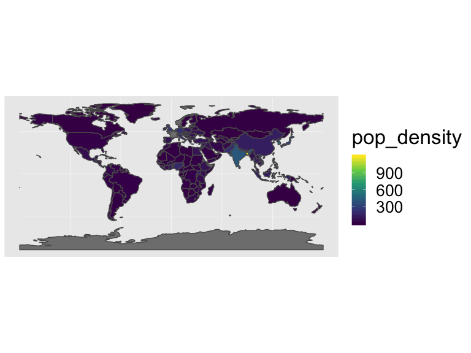
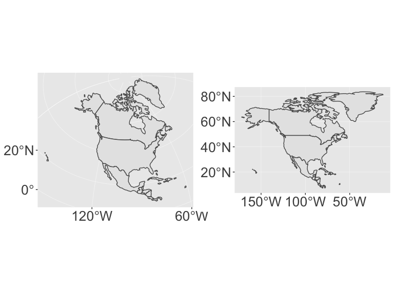

Spatial data
Course Logistics Reminder
Project Proposal
Start thinking about:
- Question you want to answer
- Problem you want to solve
Link to this script
If interested, you can download the R script associated with this presentation here.
Code Reading Challenge
Write out in a sentence what this code is doing. Make sure to catch the key points in your sentence
Working with Spatial Data in R
Available Packages
spFirst major spatial data package/formatrgdalreading and writing spatial datargeosInterface to open-source geometry engine (GEOS)sfSpatial Features in the ‘tidyverse’rastergridded data (like satellite imagery)- and a few others…
What is a Spatial Feature (sf)?
Typically an object in the real world, such as a building or a tree.
Features could include:
- a forest (polygon)
- a tree in the forest (point or polygon)
- a branch on the tree (line?)
- a complete image (multipoint, polygon, raster)
- a satellite image pixel of that forest (point or polgyon or raster)
Spatial Features
What information do we need to store in order to define points, lines, polygons in geographic space?
- lat/lon coordinates
- projection
- what type (point/line/poly)
- if polygon, is it a hole or not
- attribute data
- … ?
Geometry
Features have a geometry describing where on Earth the feature is located, and they have attributes, which describe other properties.
A Tree:
- delineation of its crown
- its stem
- point indicating its centre
Attributes:
- species
- height
- diameter
- date of observation
- …
Spatial Feature Standard
“A simple feature is defined by the OpenGIS Abstract specification to have both spatial and non-spatial attributes. Spatial attributes are geometry valued, and simple features are based on 2D geometry with linear interpolation between vertices.”
Dimensions
All geometries composed of points: coordinates in 2-, 3- or 4-dimensional space.
- X coordinate in X direction (typically longitude or similar)
- Y coordinate in Y direction (typically latitude or similar)
- Z coordinate denoting altitude
- M coordinate (rarely used), denoting some measure that is associated with the point, rather than with the feature as a whole (in which case it would be a feature attribute); examples could be time of measurement, or measurement error.
Dimensions
The four possible cases then are:
- 2D (XY): x and y, easting and northing, or longitude and latitude
- 3D (XYZ): three-dimensional points
- 3D (XYM): three-dimensional points where 3rd is some attribute space
- 4D (XYZM): four-dimensional points as XYZM (the third axis is Z, fourth M)
Common Simple Feature (SF) types

Seven common Simple Feature (SF) geometry types
| type | description |
|---|---|
POINT |
a single point |
LINESTRING |
sequence of points connected by lines |
POLYGON |
sequence of points form a closed ring |
MULTIPOINT |
set of points |
MULTILINESTRING |
set of linestrings |
MULTIPOLYGON |
set of polygons |
GEOMETRYCOLLECTION |
set of geometries |
Some formats only include these (e.g. GeoJSON)
Uncommon Geometry Types
10 more geometries 10 are rare:
CIRCULARSTRINGCOMPOUNDCURVECURVEPOLYGONMULTICURVEMULTISURFACECURVESURFACEPOLYHEDRALSURFACETINTRIANGLE
There are currently two main approaches in R to handle geographic vector data.
sp package
First package for spatial data: sp. Provides classes and methods to create points, lines, polygons, and grids and to operate on them.
~350 of the spatial analysis packages use sp data types, so it is important to know how to convert sp to and from sf objects.
sf package
sf implements a formal standard called “Simple Features” that specifies a storage and access model of spatial geometries (point, line, polygon).
A feature geometry is called simple when it consists of points connected by straight line pieces, and does not intersect itself.
This standard has been adopted widely, not only by spatial databases such as PostGIS, but also more recent standards such as GeoJSON.
How simple features in R are organized
All spatial functions and methods in sf prefixed by st_ (refering to spatial and temporal)
Simple features are implemented as R native data, using simple data structures (S3 classes, lists, matrix, vector).
Stored as data.frame objects (or very similar tbl_df) with feature geometries in a data.frame column.
Since geometries are not single-valued, they are put in a list-column, a list of length equal to the number of records in the data.frame, with each list element holding the simple feature geometry of that feature.
Components
sf, the table (data.frame) with feature attributes and feature geometries, which containssfc, the list-column with the geometries for each feature (record), which is composed ofsfg, the feature geometry of an individual simple feature.
If you work with PostGis or GeoJSON you may have come across the WKT (well-known text) format, for example like these:
POINT (30 10)
LINESTRING (30 10, 10 30, 40 40)
POLYGON ((30 10, 40 40, 20 40, 10 20, 30 10))sf implements this standard natively in R. Data are structured and conceptualized very differently from the sp approach.
I. Create geometric objects (topology)
Geometric objects (simple features) can be created from a numeric vector, matrix or a list with the coordinates. They are called sfg objects for Simple Feature Geometry.
Create a LINESTRING sfg object:
## [,1] [,2]
## [1,] 0.3046195 0.5242276
## [2,] 0.2268402 0.9591672
## [3,] 0.6675886 0.9305813## [1] "XY" "LINESTRING" "sfg"## LINESTRING (0.3046195 0.5242276, 0.2268402 0.9591672, 0.6675886 0.9305813)II. Combine all individual single feature objects for the special column.
Create a sfc (Simple Feature Collection) object of individual features:
## [1] "sfc_LINESTRING" "sfc"## Geometry set for 1 feature
## geometry type: LINESTRING
## dimension: XY
## bbox: xmin: 0.2268402 ymin: 0.5242276 xmax: 0.6675886 ymax: 0.9591672
## epsg (SRID): NA
## proj4string: NA## LINESTRING (0.3046195 0.5242276, 0.2268402 0.95...The sfc object also holds the bounding box and the projection information.
III. Add attributes.
Add attributes (in a data.frame) to the sfc object to make a sf (Simple Features) object:
## [1] "sf" "data.frame"## Simple feature collection with 1 feature and 1 field
## geometry type: LINESTRING
## dimension: XY
## bbox: xmin: 0.2268402 ymin: 0.5242276 xmax: 0.6675886 ymax: 0.9591672
## epsg (SRID): NA
## proj4string: NA
## type lnstr_sfc
## 1 random LINESTRING (0.3046195 0.524...sf Highlights
- provides fast I/O, particularly relevant for large files
- directly reads from and writes to spatial databases such as PostGIS
- compatibile with the tidyverse
- recent
ggplotrelease can read and plot thesfformat without conversion
sp and sf are not only formats for spatial objects. Other spatial packages may use their own class definitions for spatial data (for example spatstat). Usually you can find functions that convert sp and increasingly sf objects to and from these formats.
Converting formats
data(world) #load 'world' data from spData package
world_sp = as(world, "Spatial") # convert from sf to sp
world_sf = st_as_sf(world_sp) #convert from sp to sf
str(world_sp)## Formal class 'SpatialPolygonsDataFrame' [package "sp"] with 5 slots
## ..@ data :'data.frame': 177 obs. of 10 variables:
## .. ..$ iso_a2 : chr [1:177] "FJ" "TZ" "EH" "CA" ...
## .. ..$ name_long: chr [1:177] "Fiji" "Tanzania" "Western Sahara" "Canada" ...
## .. ..$ continent: chr [1:177] "Oceania" "Africa" "Africa" "North America" ...
## .. ..$ region_un: chr [1:177] "Oceania" "Africa" "Africa" "Americas" ...
## .. ..$ subregion: chr [1:177] "Melanesia" "Eastern Africa" "Northern Africa" "Northern America" ...
## .. ..$ type : chr [1:177] "Sovereign country" "Sovereign country" "Indeterminate" "Sovereign country" ...
## .. ..$ area_km2 : num [1:177] 19290 932746 96271 10036043 9510744 ...
## .. ..$ pop : num [1:177] 8.86e+05 5.22e+07 NA 3.55e+07 3.19e+08 ...
## .. ..$ lifeExp : num [1:177] 70 64.2 NA 82 78.8 ...
## .. ..$ gdpPercap: num [1:177] 8222 2402 NA 43079 51922 ...
## ..@ polygons :List of 177
## .. ..$ :Formal class 'Polygons' [package "sp"] with 5 slots
## .. .. .. ..@ Polygons :List of 3
## .. .. .. .. ..$ :Formal class 'Polygon' [package "sp"] with 5 slots
## .. .. .. .. .. .. ..@ labpt : num [1:2] 179.3 -16.6
## .. .. .. .. .. .. ..@ area : num 0.589
## .. .. .. .. .. .. ..@ hole : logi FALSE
## .. .. .. .. .. .. ..@ ringDir: int 1
## .. .. .. .. .. .. ..@ coords : num [1:8, 1:2] 180 180 179 179 179 ...
## .. .. .. .. ..$ :Formal class 'Polygon' [package "sp"] with 5 slots
## .. .. .. .. .. .. ..@ labpt : num [1:2] 178 -17.8
## .. .. .. .. .. .. ..@ area : num 0.984
## .. .. .. .. .. .. ..@ hole : logi FALSE
## .. .. .. .. .. .. ..@ ringDir: int 1
## .. .. .. .. .. .. ..@ coords : num [1:9, 1:2] 178 178 179 179 178 ...
## .. .. .. .. ..$ :Formal class 'Polygon' [package "sp"] with 5 slots
## .. .. .. .. .. .. ..@ labpt : num [1:2] -179.9 -16.3
## .. .. .. .. .. .. ..@ area : num 0.067
## .. .. .. .. .. .. ..@ hole : logi FALSE
## .. .. .. .. .. .. ..@ ringDir: int 1
## .. .. .. .. .. .. ..@ coords : num [1:5, 1:2] -180 -180 -180 -180 -180 ...
## .. .. .. ..@ plotOrder: int [1:3] 2 1 3
## .. .. .. ..@ labpt : num [1:2] 178 -17.8
## .. .. .. ..@ ID : chr "1"
## .. .. .. ..@ area : num 1.64
## .. ..$ :Formal class 'Polygons' [package "sp"] with 5 slots
## .. .. .. ..@ Polygons :List of 1
## .. .. .. .. ..$ :Formal class 'Polygon' [package "sp"] with 5 slots
## .. .. .. .. .. .. ..@ labpt : num [1:2] 34.75 -6.26
## .. .. .. .. .. .. ..@ area : num 76.3
## .. .. .. .. .. .. ..@ hole : logi FALSE
## .. .. .. .. .. .. ..@ ringDir: int 1
## .. .. .. .. .. .. ..@ coords : num [1:52, 1:2] 33.9 34.1 37.7 37.8 39.2 ...
## .. .. .. ..@ plotOrder: int 1
## .. .. .. ..@ labpt : num [1:2] 34.75 -6.26
## .. .. .. ..@ ID : chr "2"
## .. .. .. ..@ area : num 76.3
## .. ..$ :Formal class 'Polygons' [package "sp"] with 5 slots
## .. .. .. ..@ Polygons :List of 1
## .. .. .. .. ..$ :Formal class 'Polygon' [package "sp"] with 5 slots
## .. .. .. .. .. .. ..@ labpt : num [1:2] -12.1 24.3
## .. .. .. .. .. .. ..@ area : num 8.6
## .. .. .. .. .. .. ..@ hole : logi FALSE
## .. .. .. .. .. .. ..@ ringDir: int 1
## .. .. .. .. .. .. ..@ coords : num [1:28, 1:2] -8.67 -8.67 -8.68 -8.69 -11.97 ...
## .. .. .. ..@ plotOrder: int 1
## .. .. .. ..@ labpt : num [1:2] -12.1 24.3
## .. .. .. ..@ ID : chr "3"
## .. .. .. ..@ area : num 8.6
## .. ..$ :Formal class 'Polygons' [package "sp"] with 5 slots
## .. .. .. ..@ Polygons :List of 30
## .. .. .. .. ..$ :Formal class 'Polygon' [package "sp"] with 5 slots
## .. .. .. .. .. .. ..@ labpt : num [1:2] -101.6 57.7
## .. .. .. .. .. .. ..@ area : num 1281
## .. .. .. .. .. .. ..@ hole : logi FALSE
## .. .. .. .. .. .. ..@ ringDir: int 1
## .. .. .. .. .. .. ..@ coords : num [1:274, 1:2] -123 -123 -125 -126 -127 ...
## .. .. .. .. ..$ :Formal class 'Polygon' [package "sp"] with 5 slots
## .. .. .. .. .. .. ..@ labpt : num [1:2] -83 62.6
## .. .. .. .. .. .. ..@ area : num 1.04
## .. .. .. .. .. .. ..@ hole : logi FALSE
## .. .. .. .. .. .. ..@ ringDir: int 1
## .. .. .. .. .. .. ..@ coords : num [1:7, 1:2] -84 -83.3 -81.9 -81.9 -83.1 ...
## .. .. .. .. ..$ :Formal class 'Polygon' [package "sp"] with 5 slots
## .. .. .. .. .. .. ..@ labpt : num [1:2] -78.8 73.2
## .. .. .. .. .. .. ..@ area : num 3.15
## .. .. .. .. .. .. ..@ hole : logi FALSE
## .. .. .. .. .. .. ..@ ringDir: int 1
## .. .. .. .. .. .. ..@ coords : num [1:11, 1:2] -79.8 -80.9 -80.8 -80.4 -78.1 ...
## .. .. .. .. ..$ :Formal class 'Polygon' [package "sp"] with 5 slots
## .. .. .. .. .. .. ..@ labpt : num [1:2] -79.8 62
## .. .. .. .. .. .. ..@ area : num 0.532
## .. .. .. .. .. .. ..@ hole : logi FALSE
## .. .. .. .. .. .. ..@ ringDir: int 1
## .. .. .. .. .. .. ..@ coords : num [1:8, 1:2] -80.3 -79.9 -79.5 -79.3 -79.7 ...
## .. .. .. .. ..$ :Formal class 'Polygon' [package "sp"] with 5 slots
## .. .. .. .. .. .. ..@ labpt : num [1:2] -95.1 75.1
## .. .. .. .. .. .. ..@ area : num 2.18
## .. .. .. .. .. .. ..@ hole : logi FALSE
## .. .. .. .. .. .. ..@ ringDir: int 1
## .. .. .. .. .. .. ..@ coords : num [1:8, 1:2] -93.6 -94.2 -95.6 -96.8 -96.3 ...
## .. .. .. .. ..$ :Formal class 'Polygon' [package "sp"] with 5 slots
## .. .. .. .. .. .. ..@ labpt : num [1:2] -95.1 77.7
## .. .. .. .. .. .. ..@ area : num 0.711
## .. .. .. .. .. .. ..@ hole : logi FALSE
## .. .. .. .. .. .. ..@ ringDir: int 1
## .. .. .. .. .. .. ..@ coords : num [1:7, 1:2] -93.8 -94.3 -96.2 -96.4 -94.4 ...
## .. .. .. .. ..$ :Formal class 'Polygon' [package "sp"] with 5 slots
## .. .. .. .. .. .. ..@ labpt : num [1:2] -97.2 78.4
## .. .. .. .. .. .. ..@ area : num 2.14
## .. .. .. .. .. .. ..@ hole : logi FALSE
## .. .. .. .. .. .. ..@ ringDir: int 1
## .. .. .. .. .. .. ..@ coords : num [1:9, 1:2] -96.8 -95.6 -95.8 -97.3 -98.1 ...
## .. .. .. .. ..$ :Formal class 'Polygon' [package "sp"] with 5 slots
## .. .. .. .. .. .. ..@ labpt : num [1:2] -88.1 75.4
## .. .. .. .. .. .. ..@ area : num 19.2
## .. .. .. .. .. .. ..@ hole : logi FALSE
## .. .. .. .. .. .. ..@ ringDir: int 1
## .. .. .. .. .. .. ..@ coords : num [1:28, 1:2] -88.2 -89.8 -92.4 -92.8 -92.9 ...
## .. .. .. .. ..$ :Formal class 'Polygon' [package "sp"] with 5 slots
## .. .. .. .. .. .. ..@ labpt : num [1:2] -111.7 77.8
## .. .. .. .. .. .. ..@ area : num 1.69
## .. .. .. .. .. .. ..@ hole : logi FALSE
## .. .. .. .. .. .. ..@ ringDir: int 1
## .. .. .. .. .. .. ..@ coords : num [1:7, 1:2] -111 -110 -110 -112 -114 ...
## .. .. .. .. ..$ :Formal class 'Polygon' [package "sp"] with 5 slots
## .. .. .. .. .. .. ..@ labpt : num [1:2] -111.3 78.6
## .. .. .. .. .. .. ..@ area : num 0.793
## .. .. .. .. .. .. ..@ hole : logi FALSE
## .. .. .. .. .. .. ..@ ringDir: int 1
## .. .. .. .. .. .. ..@ coords : num [1:7, 1:2] -111 -110 -111 -113 -113 ...
## .. .. .. .. ..$ :Formal class 'Polygon' [package "sp"] with 5 slots
## .. .. .. .. .. .. ..@ labpt : num [1:2] -56 48.7
## .. .. .. .. .. .. ..@ area : num 15.2
## .. .. .. .. .. .. ..@ hole : logi FALSE
## .. .. .. .. .. .. ..@ ringDir: int 1
## .. .. .. .. .. .. ..@ coords : num [1:33, 1:2] -55.6 -56.1 -56.8 -56.1 -55.5 ...
## .. .. .. .. ..$ :Formal class 'Polygon' [package "sp"] with 5 slots
## .. .. .. .. .. .. ..@ labpt : num [1:2] -84.1 64.3
## .. .. .. .. .. .. ..@ area : num 7.97
## .. .. .. .. .. .. ..@ hole : logi FALSE
## .. .. .. .. .. .. ..@ ringDir: int 1
## .. .. .. .. .. .. ..@ coords : num [1:20, 1:2] -83.9 -82.8 -81.6 -81.6 -80.8 ...
## .. .. .. .. ..$ :Formal class 'Polygon' [package "sp"] with 5 slots
## .. .. .. .. .. .. ..@ labpt : num [1:2] -74.9 68.6
## .. .. .. .. .. .. ..@ area : num 118
## .. .. .. .. .. .. ..@ hole : logi FALSE
## .. .. .. .. .. .. ..@ ringDir: int 1
## .. .. .. .. .. .. ..@ coords : num [1:73, 1:2] -78.8 -77.8 -75.6 -74.2 -74.1 ...
## .. .. .. .. ..$ :Formal class 'Polygon' [package "sp"] with 5 slots
## .. .. .. .. .. .. ..@ labpt : num [1:2] -93.8 73.3
## .. .. .. .. .. .. ..@ area : num 7.12
## .. .. .. .. .. .. ..@ hole : logi FALSE
## .. .. .. .. .. .. ..@ ringDir: int 1
## .. .. .. .. .. .. ..@ coords : num [1:11, 1:2] -94.5 -92.4 -90.5 -92 -93.2 ...
## .. .. .. .. ..$ :Formal class 'Polygon' [package "sp"] with 5 slots
## .. .. .. .. .. .. ..@ labpt : num [1:2] -119.2 76.8
## .. .. .. .. .. .. ..@ area : num 6.08
## .. .. .. .. .. .. ..@ hole : logi FALSE
## .. .. .. .. .. .. ..@ ringDir: int 1
## .. .. .. .. .. .. ..@ coords : num [1:12, 1:2] -123 -123 -121 -119 -118 ...
## .. .. .. .. ..$ :Formal class 'Polygon' [package "sp"] with 5 slots
## .. .. .. .. .. .. ..@ labpt : num [1:2] -132.3 53.4
## .. .. .. .. .. .. ..@ area : num 1.57
## .. .. .. .. .. .. ..@ hole : logi FALSE
## .. .. .. .. .. .. ..@ ringDir: int 1
## .. .. .. .. .. .. ..@ coords : num [1:11, 1:2] -133 -132 -132 -131 -132 ...
## .. .. .. .. ..$ :Formal class 'Polygon' [package "sp"] with 5 slots
## .. .. .. .. .. .. ..@ labpt : num [1:2] -102.6 78.6
## .. .. .. .. .. .. ..@ area : num 3.98
## .. .. .. .. .. .. ..@ hole : logi FALSE
## .. .. .. .. .. .. ..@ ringDir: int 1
## .. .. .. .. .. .. ..@ coords : num [1:11, 1:2] -105.5 -103.5 -100.8 -100.1 -99.7 ...
## .. .. .. .. ..$ :Formal class 'Polygon' [package "sp"] with 5 slots
## .. .. .. .. .. .. ..@ labpt : num [1:2] -126 49.6
## .. .. .. .. .. .. ..@ area : num 4.06
## .. .. .. .. .. .. ..@ hole : logi FALSE
## .. .. .. .. .. .. ..@ ringDir: int 1
## .. .. .. .. .. .. ..@ coords : num [1:16, 1:2] -124 -124 -126 -126 -127 ...
## .. .. .. .. ..$ :Formal class 'Polygon' [package "sp"] with 5 slots
## .. .. .. .. .. .. ..@ labpt : num [1:2] -121.5 72.9
## .. .. .. .. .. .. ..@ area : num 20.1
## .. .. .. .. .. .. ..@ hole : logi FALSE
## .. .. .. .. .. .. ..@ ringDir: int 1
## .. .. .. .. .. .. ..@ coords : num [1:17, 1:2] -122 -120 -118 -117 -116 ...
## .. .. .. .. ..$ :Formal class 'Polygon' [package "sp"] with 5 slots
## .. .. .. .. .. .. ..@ labpt : num [1:2] -111.6 75.5
## .. .. .. .. .. .. ..@ area : num 14.3
## .. .. .. .. .. .. ..@ hole : logi FALSE
## .. .. .. .. .. .. ..@ ringDir: int 1
## .. .. .. .. .. .. ..@ coords : num [1:22, 1:2] -108 -107 -106 -106 -106 ...
## .. .. .. .. ..$ :Formal class 'Polygon' [package "sp"] with 5 slots
## .. .. .. .. .. .. ..@ labpt : num [1:2] -110.5 70.8
## .. .. .. .. .. .. ..@ area : num 54.4
## .. .. .. .. .. .. ..@ hole : logi FALSE
## .. .. .. .. .. .. ..@ ringDir: int 1
## .. .. .. .. .. .. ..@ coords : num [1:45, 1:2] -107 -105 -105 -104 -103 ...
## .. .. .. .. ..$ :Formal class 'Polygon' [package "sp"] with 5 slots
## .. .. .. .. .. .. ..@ labpt : num [1:2] -99.2 72.6
## .. .. .. .. .. .. ..@ area : num 9.4
## .. .. .. .. .. .. ..@ hole : logi FALSE
## .. .. .. .. .. .. ..@ ringDir: int 1
## .. .. .. .. .. .. ..@ coords : num [1:15, 1:2] -100.4 -101.5 -100.4 -99.2 -97.4 ...
## .. .. .. .. ..$ :Formal class 'Polygon' [package "sp"] with 5 slots
## .. .. .. .. .. .. ..@ labpt : num [1:2] -105.6 73.3
## .. .. .. .. .. .. ..@ area : num 1.16
## .. .. .. .. .. .. ..@ hole : logi FALSE
## .. .. .. .. .. .. ..@ ringDir: int 1
## .. .. .. .. .. .. ..@ coords : num [1:6, 1:2] -107 -105 -104 -105 -107 ...
## .. .. .. .. ..$ :Formal class 'Polygon' [package "sp"] with 5 slots
## .. .. .. .. .. .. ..@ labpt : num [1:2] -99.8 75.8
## .. .. .. .. .. .. ..@ area : num 6.11
## .. .. .. .. .. .. ..@ hole : logi FALSE
## .. .. .. .. .. .. ..@ ringDir: int 1
## .. .. .. .. .. .. ..@ coords : num [1:13, 1:2] -98.5 -97.7 -97.7 -98.2 -99.8 ...
## .. .. .. .. ..$ :Formal class 'Polygon' [package "sp"] with 5 slots
## .. .. .. .. .. .. ..@ labpt : num [1:2] -91.6 79.7
## .. .. .. .. .. .. ..@ area : num 19.4
## .. .. .. .. .. .. ..@ hole : logi FALSE
## .. .. .. .. .. .. ..@ ringDir: int 1
## .. .. .. .. .. .. ..@ coords : num [1:21, 1:2] -96 -95.3 -94.3 -94.7 -92.4 ...
## .. .. .. .. ..$ :Formal class 'Polygon' [package "sp"] with 5 slots
## .. .. .. .. .. .. ..@ labpt : num [1:2] -78.6 80.4
## .. .. .. .. .. .. ..@ area : num 105
## .. .. .. .. .. .. ..@ hole : logi FALSE
## .. .. .. .. .. .. ..@ ringDir: int 1
## .. .. .. .. .. .. ..@ coords : num [1:65, 1:2] -91.6 -90.1 -88.9 -87 -85.5 ...
## .. .. .. .. ..$ :Formal class 'Polygon' [package "sp"] with 5 slots
## .. .. .. .. .. .. ..@ labpt : num [1:2] -76.2 67.7
## .. .. .. .. .. .. ..@ area : num 1.92
## .. .. .. .. .. .. ..@ hole : logi FALSE
## .. .. .. .. .. .. ..@ ringDir: int 1
## .. .. .. .. .. .. ..@ coords : num [1:9, 1:2] -75.2 -75.9 -77 -77.2 -76.8 ...
## .. .. .. .. ..$ :Formal class 'Polygon' [package "sp"] with 5 slots
## .. .. .. .. .. .. ..@ labpt : num [1:2] -97.6 69.4
## .. .. .. .. .. .. ..@ area : num 2.94
## .. .. .. .. .. .. ..@ hole : logi FALSE
## .. .. .. .. .. .. ..@ ringDir: int 1
## .. .. .. .. .. .. ..@ coords : num [1:11, 1:2] -96.3 -95.6 -96.3 -97.6 -98.4 ...
## .. .. .. .. ..$ :Formal class 'Polygon' [package "sp"] with 5 slots
## .. .. .. .. .. .. ..@ labpt : num [1:2] -63.1 49.5
## .. .. .. .. .. .. ..@ area : num 0.97
## .. .. .. .. .. .. ..@ hole : logi FALSE
## .. .. .. .. .. .. ..@ ringDir: int 1
## .. .. .. .. .. .. ..@ coords : num [1:8, 1:2] -64.5 -64.2 -62.9 -61.8 -61.8 ...
## .. .. .. .. ..$ :Formal class 'Polygon' [package "sp"] with 5 slots
## .. .. .. .. .. .. ..@ labpt : num [1:2] -63.3 46.4
## .. .. .. .. .. .. ..@ area : num 0.873
## .. .. .. .. .. .. ..@ hole : logi FALSE
## .. .. .. .. .. .. ..@ ringDir: int 1
## .. .. .. .. .. .. ..@ coords : num [1:9, 1:2] -64 -63.7 -62.9 -62 -62.5 ...
## .. .. .. ..@ plotOrder: int [1:30] 1 13 26 21 19 25 8 11 20 22 ...
## .. .. .. ..@ labpt : num [1:2] -101.6 57.7
## .. .. .. ..@ ID : chr "4"
## .. .. .. ..@ area : num 1713
## .. ..$ :Formal class 'Polygons' [package "sp"] with 5 slots
## .. .. .. ..@ Polygons :List of 10
## .. .. .. .. ..$ :Formal class 'Polygon' [package "sp"] with 5 slots
## .. .. .. .. .. .. ..@ labpt : num [1:2] -99.1 39.5
## .. .. .. .. .. .. ..@ area : num 840
## .. .. .. .. .. .. ..@ hole : logi FALSE
## .. .. .. .. .. .. ..@ ringDir: int 1
## .. .. .. .. .. .. ..@ coords : num [1:233, 1:2] -123 -120 -117 -116 -113 ...
## .. .. .. .. ..$ :Formal class 'Polygon' [package "sp"] with 5 slots
## .. .. .. .. .. .. ..@ labpt : num [1:2] -155.5 19.6
## .. .. .. .. .. .. ..@ area : num 0.964
## .. .. .. .. .. .. ..@ hole : logi FALSE
## .. .. .. .. .. .. ..@ ringDir: int 1
## .. .. .. .. .. .. ..@ coords : num [1:17, 1:2] -155 -155 -155 -155 -155 ...
## .. .. .. .. ..$ :Formal class 'Polygon' [package "sp"] with 5 slots
## .. .. .. .. .. .. ..@ labpt : num [1:2] -156.4 20.8
## .. .. .. .. .. .. ..@ area : num 0.176
## .. .. .. .. .. .. ..@ hole : logi FALSE
## .. .. .. .. .. .. ..@ ringDir: int 1
## .. .. .. .. .. .. ..@ coords : num [1:9, 1:2] -156 -156 -156 -157 -157 ...
## .. .. .. .. ..$ :Formal class 'Polygon' [package "sp"] with 5 slots
## .. .. .. .. .. .. ..@ labpt : num [1:2] -157 21.1
## .. .. .. .. .. .. ..@ area : num 0.061
## .. .. .. .. .. .. ..@ hole : logi FALSE
## .. .. .. .. .. .. ..@ ringDir: int 1
## .. .. .. .. .. .. ..@ coords : num [1:5, 1:2] -157 -157 -157 -157 -157 ...
## .. .. .. .. ..$ :Formal class 'Polygon' [package "sp"] with 5 slots
## .. .. .. .. .. .. ..@ labpt : num [1:2] -158 21.5
## .. .. .. .. .. .. ..@ area : num 0.158
## .. .. .. .. .. .. ..@ hole : logi FALSE
## .. .. .. .. .. .. ..@ ringDir: int 1
## .. .. .. .. .. .. ..@ coords : num [1:9, 1:2] -158 -158 -158 -158 -158 ...
## .. .. .. .. ..$ :Formal class 'Polygon' [package "sp"] with 5 slots
## .. .. .. .. .. .. ..@ labpt : num [1:2] -159.5 22.1
## .. .. .. .. .. .. ..@ area : num 0.105
## .. .. .. .. .. .. ..@ hole : logi FALSE
## .. .. .. .. .. .. ..@ ringDir: int 1
## .. .. .. .. .. .. ..@ coords : num [1:7, 1:2] -159 -159 -159 -160 -160 ...
## .. .. .. .. ..$ :Formal class 'Polygon' [package "sp"] with 5 slots
## .. .. .. .. .. .. ..@ labpt : num [1:2] -166.4 60.1
## .. .. .. .. .. .. ..@ area : num 0.729
## .. .. .. .. .. .. ..@ hole : logi FALSE
## .. .. .. .. .. .. ..@ ringDir: int 1
## .. .. .. .. .. .. ..@ coords : num [1:7, 1:2] -166 -166 -166 -166 -167 ...
## .. .. .. .. ..$ :Formal class 'Polygon' [package "sp"] with 5 slots
## .. .. .. .. .. .. ..@ labpt : num [1:2] -153.5 57.4
## .. .. .. .. .. .. ..@ area : num 1.8
## .. .. .. .. .. .. ..@ hole : logi FALSE
## .. .. .. .. .. .. ..@ ringDir: int 1
## .. .. .. .. .. .. ..@ coords : num [1:9, 1:2] -153 -153 -152 -153 -154 ...
## .. .. .. .. ..$ :Formal class 'Polygon' [package "sp"] with 5 slots
## .. .. .. .. .. .. ..@ labpt : num [1:2] -152.7 64.4
## .. .. .. .. .. .. ..@ area : num 277
## .. .. .. .. .. .. ..@ hole : logi FALSE
## .. .. .. .. .. .. ..@ ringDir: int 1
## .. .. .. .. .. .. ..@ coords : num [1:139, 1:2] -141 -141 -141 -141 -140 ...
## .. .. .. .. ..$ :Formal class 'Polygon' [package "sp"] with 5 slots
## .. .. .. .. .. .. ..@ labpt : num [1:2] -170.3 63.4
## .. .. .. .. .. .. ..@ area : num 1.03
## .. .. .. .. .. .. ..@ hole : logi FALSE
## .. .. .. .. .. .. ..@ ringDir: int 1
## .. .. .. .. .. .. ..@ coords : num [1:12, 1:2] -172 -171 -170 -170 -169 ...
## .. .. .. ..@ plotOrder: int [1:10] 1 9 8 10 2 7 3 5 6 4
## .. .. .. ..@ labpt : num [1:2] -99.1 39.5
## .. .. .. ..@ ID : chr "5"
## .. .. .. ..@ area : num 1122
## .. ..$ :Formal class 'Polygons' [package "sp"] with 5 slots
## .. .. .. ..@ Polygons :List of 1
## .. .. .. .. ..$ :Formal class 'Polygon' [package "sp"] with 5 slots
## .. .. .. .. .. .. ..@ labpt : num [1:2] 67.3 48.2
## .. .. .. .. .. .. ..@ area : num 331
## .. .. .. .. .. .. ..@ hole : logi FALSE
## .. .. .. .. .. .. ..@ ringDir: int 1
## .. .. .. .. .. .. ..@ coords : num [1:112, 1:2] 87.4 86.6 85.8 85.7 85.2 ...
## .. .. .. ..@ plotOrder: int 1
## .. .. .. ..@ labpt : num [1:2] 67.3 48.2
## .. .. .. ..@ ID : chr "6"
## .. .. .. ..@ area : num 331
## .. ..$ :Formal class 'Polygons' [package "sp"] with 5 slots
## .. .. .. ..@ Polygons :List of 1
## .. .. .. .. ..$ :Formal class 'Polygon' [package "sp"] with 5 slots
## .. .. .. .. .. .. ..@ labpt : num [1:2] 63.2 41.7
## .. .. .. .. .. .. ..@ area : num 50
## .. .. .. .. .. .. ..@ hole : logi FALSE
## .. .. .. .. .. .. ..@ ringDir: int 1
## .. .. .. .. .. .. ..@ coords : num [1:54, 1:2] 56 55.9 58.5 58.7 60.2 ...
## .. .. .. ..@ plotOrder: int 1
## .. .. .. ..@ labpt : num [1:2] 63.2 41.7
## .. .. .. ..@ ID : chr "7"
## .. .. .. ..@ area : num 50
## .. ..$ :Formal class 'Polygons' [package "sp"] with 5 slots
## .. .. .. ..@ Polygons :List of 4
## .. .. .. .. ..$ :Formal class 'Polygon' [package "sp"] with 5 slots
## .. .. .. .. .. .. ..@ labpt : num [1:2] 144.33 -6.65
## .. .. .. .. .. .. ..@ area : num 32.9
## .. .. .. .. .. .. ..@ hole : logi FALSE
## .. .. .. .. .. .. ..@ ringDir: int 1
## .. .. .. .. .. .. ..@ coords : num [1:34, 1:2] 141 143 145 145 146 ...
## .. .. .. .. ..$ :Formal class 'Polygon' [package "sp"] with 5 slots
## .. .. .. .. .. .. ..@ labpt : num [1:2] 152.12 -3.52
## .. .. .. .. .. .. ..@ area : num 1.01
## .. .. .. .. .. .. ..@ hole : logi FALSE
## .. .. .. .. .. .. ..@ ringDir: int 1
## .. .. .. .. .. .. ..@ coords : num [1:14, 1:2] 153 153 153 153 153 ...
## .. .. .. .. ..$ :Formal class 'Polygon' [package "sp"] with 5 slots
## .. .. .. .. .. .. ..@ labpt : num [1:2] 150.61 -5.46
## .. .. .. .. .. .. ..@ area : num 3.14
## .. .. .. .. .. .. ..@ hole : logi FALSE
## .. .. .. .. .. .. ..@ ringDir: int 1
## .. .. .. .. .. .. ..@ coords : num [1:22, 1:2] 151 151 150 150 149 ...
## .. .. .. .. ..$ :Formal class 'Polygon' [package "sp"] with 5 slots
## .. .. .. .. .. .. ..@ labpt : num [1:2] 155.23 -6.13
## .. .. .. .. .. .. ..@ area : num 0.906
## .. .. .. .. .. .. ..@ hole : logi FALSE
## .. .. .. .. .. .. ..@ ringDir: int 1
## .. .. .. .. .. .. ..@ coords : num [1:11, 1:2] 155 155 156 156 156 ...
## .. .. .. ..@ plotOrder: int [1:4] 1 3 2 4
## .. .. .. ..@ labpt : num [1:2] 144.33 -6.65
## .. .. .. ..@ ID : chr "8"
## .. .. .. ..@ area : num 38
## .. ..$ :Formal class 'Polygons' [package "sp"] with 5 slots
## .. .. .. ..@ Polygons :List of 13
## .. .. .. .. ..$ :Formal class 'Polygon' [package "sp"] with 5 slots
## .. .. .. .. .. .. ..@ labpt : num [1:2] 137.41 -4.13
## .. .. .. .. .. .. ..@ area : num 33.4
## .. .. .. .. .. .. ..@ hole : logi FALSE
## .. .. .. .. .. .. ..@ ringDir: int 1
## .. .. .. .. .. .. ..@ coords : num [1:38, 1:2] 141 141 141 140 139 ...
## .. .. .. .. ..$ :Formal class 'Polygon' [package "sp"] with 5 slots
## .. .. .. .. .. .. ..@ labpt : num [1:2] 124.3 -9.65
## .. .. .. .. .. .. ..@ area : num 1.28
## .. .. .. .. .. .. ..@ hole : logi FALSE
## .. .. .. .. .. .. ..@ ringDir: int 1
## .. .. .. .. .. .. ..@ coords : num [1:9, 1:2] 125 125 125 124 124 ...
## .. .. .. .. ..$ :Formal class 'Polygon' [package "sp"] with 5 slots
## .. .. .. .. .. .. ..@ labpt : num [1:2] 134.42 -6.13
## .. .. .. .. .. .. ..@ area : num 0.516
## .. .. .. .. .. .. ..@ hole : logi FALSE
## .. .. .. .. .. .. ..@ ringDir: int 1
## .. .. .. .. .. .. ..@ coords : num [1:7, 1:2] 134 134 134 134 135 ...
## .. .. .. .. ..$ :Formal class 'Polygon' [package "sp"] with 5 slots
## .. .. .. .. .. .. ..@ labpt : num [1:2] 114.023 -0.254
## .. .. .. .. .. .. ..@ area : num 43.1
## .. .. .. .. .. .. ..@ hole : logi FALSE
## .. .. .. .. .. .. ..@ ringDir: int 1
## .. .. .. .. .. .. ..@ coords : num [1:39, 1:2] 118 117 118 118 119 ...
## .. .. .. .. ..$ :Formal class 'Polygon' [package "sp"] with 5 slots
## .. .. .. .. .. .. ..@ labpt : num [1:2] 129.32 -3.19
## .. .. .. .. .. .. ..@ area : num 1.47
## .. .. .. .. .. .. ..@ hole : logi FALSE
## .. .. .. .. .. .. ..@ ringDir: int 1
## .. .. .. .. .. .. ..@ coords : num [1:9, 1:2] 129 130 131 130 129 ...
## .. .. .. .. ..$ :Formal class 'Polygon' [package "sp"] with 5 slots
## .. .. .. .. .. .. ..@ labpt : num [1:2] 126.64 -3.42
## .. .. .. .. .. .. ..@ area : num 0.565
## .. .. .. .. .. .. ..@ hole : logi FALSE
## .. .. .. .. .. .. ..@ ringDir: int 1
## .. .. .. .. .. .. ..@ coords : num [1:6, 1:2] 127 126 126 127 127 ...
## .. .. .. .. ..$ :Formal class 'Polygon' [package "sp"] with 5 slots
## .. .. .. .. .. .. ..@ labpt : num [1:2] 128.016 0.779
## .. .. .. .. .. .. ..@ area : num 2.09
## .. .. .. .. .. .. ..@ hole : logi FALSE
## .. .. .. .. .. .. ..@ ringDir: int 1
## .. .. .. .. .. .. ..@ coords : num [1:13, 1:2] 128 128 129 129 129 ...
## .. .. .. .. ..$ :Formal class 'Polygon' [package "sp"] with 5 slots
## .. .. .. .. .. .. ..@ labpt : num [1:2] 121.2 -2.11
## .. .. .. .. .. .. ..@ area : num 15.3
## .. .. .. .. .. .. ..@ hole : logi FALSE
## .. .. .. .. .. .. ..@ ringDir: int 1
## .. .. .. .. .. .. ..@ coords : num [1:45, 1:2] 123 124 125 125 124 ...
## .. .. .. .. ..$ :Formal class 'Polygon' [package "sp"] with 5 slots
## .. .. .. .. .. .. ..@ labpt : num [1:2] 120 -9.8
## .. .. .. .. .. .. ..@ area : num 0.813
## .. .. .. .. .. .. ..@ hole : logi FALSE
## .. .. .. .. .. .. ..@ ringDir: int 1
## .. .. .. .. .. .. ..@ coords : num [1:7, 1:2] 120 119 120 120 121 ...
## .. .. .. .. ..$ :Formal class 'Polygon' [package "sp"] with 5 slots
## .. .. .. .. .. .. ..@ labpt : num [1:2] 121.31 -8.59
## .. .. .. .. .. .. ..@ area : num 1.31
## .. .. .. .. .. .. ..@ hole : logi FALSE
## .. .. .. .. .. .. ..@ ringDir: int 1
## .. .. .. .. .. .. ..@ coords : num [1:9, 1:2] 121 122 123 123 121 ...
## .. .. .. .. ..$ :Formal class 'Polygon' [package "sp"] with 5 slots
## .. .. .. .. .. .. ..@ labpt : num [1:2] 117.91 -8.64
## .. .. .. .. .. .. ..@ area : num 1.18
## .. .. .. .. .. .. ..@ hole : logi FALSE
## .. .. .. .. .. .. ..@ ringDir: int 1
## .. .. .. .. .. .. ..@ coords : num [1:10, 1:2] 118 119 119 118 117 ...
## .. .. .. .. ..$ :Formal class 'Polygon' [package "sp"] with 5 slots
## .. .. .. .. .. .. ..@ labpt : num [1:2] 110.18 -7.34
## .. .. .. .. .. .. ..@ area : num 11.3
## .. .. .. .. .. .. ..@ hole : logi FALSE
## .. .. .. .. .. .. ..@ ringDir: int 1
## .. .. .. .. .. .. ..@ coords : num [1:23, 1:2] 108 109 111 111 113 ...
## .. .. .. .. ..$ :Formal class 'Polygon' [package "sp"] with 5 slots
## .. .. .. .. .. .. ..@ labpt : num [1:2] 101.554 -0.413
## .. .. .. .. .. .. ..@ area : num 35.8
## .. .. .. .. .. .. ..@ hole : logi FALSE
## .. .. .. .. .. .. ..@ ringDir: int 1
## .. .. .. .. .. .. ..@ coords : num [1:35, 1:2] 104 105 105 106 106 ...
## .. .. .. ..@ plotOrder: int [1:13] 4 13 1 8 12 7 5 10 2 11 ...
## .. .. .. ..@ labpt : num [1:2] 114.023 -0.254
## .. .. .. ..@ ID : chr "9"
## .. .. .. ..@ area : num 148
## .. ..$ :Formal class 'Polygons' [package "sp"] with 5 slots
## .. .. .. ..@ Polygons :List of 2
## .. .. .. .. ..$ :Formal class 'Polygon' [package "sp"] with 5 slots
## .. .. .. .. .. .. ..@ labpt : num [1:2] -67.3 -54.4
## .. .. .. .. .. .. ..@ area : num 3.3
## .. .. .. .. .. .. ..@ hole : logi FALSE
## .. .. .. .. .. .. ..@ ringDir: int 1
## .. .. .. .. .. .. ..@ coords : num [1:11, 1:2] -68.6 -68.2 -67.8 -66.5 -65 ...
## .. .. .. .. ..$ :Formal class 'Polygon' [package "sp"] with 5 slots
## .. .. .. .. .. .. ..@ labpt : num [1:2] -65.1 -35.2
## .. .. .. .. .. .. ..@ area : num 276
## .. .. .. .. .. .. ..@ hole : logi FALSE
## .. .. .. .. .. .. ..@ ringDir: int 1
## .. .. .. .. .. .. ..@ coords : num [1:110, 1:2] -57.6 -57.9 -58.1 -58.1 -58.3 ...
## .. .. .. ..@ plotOrder: int [1:2] 2 1
## .. .. .. ..@ labpt : num [1:2] -65.1 -35.2
## .. .. .. ..@ ID : chr "10"
## .. .. .. ..@ area : num 279
## .. ..$ :Formal class 'Polygons' [package "sp"] with 5 slots
## .. .. .. ..@ Polygons :List of 2
## .. .. .. .. ..$ :Formal class 'Polygon' [package "sp"] with 5 slots
## .. .. .. .. .. .. ..@ labpt : num [1:2] -70.2 -54.2
## .. .. .. .. .. .. ..@ area : num 8.76
## .. .. .. .. .. .. ..@ hole : logi FALSE
## .. .. .. .. .. .. ..@ ringDir: int 1
## .. .. .. .. .. .. ..@ coords : num [1:20, 1:2] -68.6 -68.6 -67.6 -67 -67.3 ...
## .. .. .. .. ..$ :Formal class 'Polygon' [package "sp"] with 5 slots
## .. .. .. .. .. .. ..@ labpt : num [1:2] -71.7 -37.3
## .. .. .. .. .. .. ..@ area : num 77.7
## .. .. .. .. .. .. ..@ hole : logi FALSE
## .. .. .. .. .. .. ..@ ringDir: int 1
## .. .. .. .. .. .. ..@ coords : num [1:94, 1:2] -69.6 -69.1 -69 -68.4 -68.8 ...
## .. .. .. ..@ plotOrder: int [1:2] 2 1
## .. .. .. ..@ labpt : num [1:2] -71.7 -37.3
## .. .. .. ..@ ID : chr "11"
## .. .. .. ..@ area : num 86.5
## .. ..$ :Formal class 'Polygons' [package "sp"] with 5 slots
## .. .. .. ..@ Polygons :List of 1
## .. .. .. .. ..$ :Formal class 'Polygon' [package "sp"] with 5 slots
## .. .. .. .. .. .. ..@ labpt : num [1:2] 23.58 -2.85
## .. .. .. .. .. .. ..@ area : num 190
## .. .. .. .. .. .. ..@ hole : logi FALSE
## .. .. .. .. .. .. ..@ ringDir: int 1
## .. .. .. .. .. .. ..@ coords : num [1:124, 1:2] 29.3 29.5 29.4 29.6 30.2 ...
## .. .. .. ..@ plotOrder: int 1
## .. .. .. ..@ labpt : num [1:2] 23.58 -2.85
## .. .. .. ..@ ID : chr "12"
## .. .. .. ..@ area : num 190
## .. ..$ :Formal class 'Polygons' [package "sp"] with 5 slots
## .. .. .. ..@ Polygons :List of 1
## .. .. .. .. ..$ :Formal class 'Polygon' [package "sp"] with 5 slots
## .. .. .. .. .. .. ..@ labpt : num [1:2] 45.73 4.75
## .. .. .. .. .. .. ..@ area : num 39.5
## .. .. .. .. .. .. ..@ hole : logi FALSE
## .. .. .. .. .. .. ..@ ringDir: int 1
## .. .. .. .. .. .. ..@ coords : num [1:37, 1:2] 41.6 41 41 41.9 42.1 ...
## .. .. .. ..@ plotOrder: int 1
## .. .. .. ..@ labpt : num [1:2] 45.73 4.75
## .. .. .. ..@ ID : chr "13"
## .. .. .. ..@ area : num 39.5
## .. ..$ :Formal class 'Polygons' [package "sp"] with 5 slots
## .. .. .. ..@ Polygons :List of 1
## .. .. .. .. ..$ :Formal class 'Polygon' [package "sp"] with 5 slots
## .. .. .. .. .. .. ..@ labpt : num [1:2] 37.792 0.596
## .. .. .. .. .. .. ..@ area : num 48
## .. .. .. .. .. .. ..@ hole : logi FALSE
## .. .. .. .. .. .. ..@ ringDir: int 1
## .. .. .. .. .. .. ..@ coords : num [1:37, 1:2] 39.2 37.8 37.7 34.1 33.9 ...
## .. .. .. ..@ plotOrder: int 1
## .. .. .. ..@ labpt : num [1:2] 37.792 0.596
## .. .. .. ..@ ID : chr "14"
## .. .. .. ..@ area : num 48
## .. ..$ :Formal class 'Polygons' [package "sp"] with 5 slots
## .. .. .. ..@ Polygons :List of 1
## .. .. .. .. ..$ :Formal class 'Polygon' [package "sp"] with 5 slots
## .. .. .. .. .. .. ..@ labpt : num [1:2] 29.9 16
## .. .. .. .. .. .. ..@ area : num 156
## .. .. .. .. .. .. ..@ hole : logi FALSE
## .. .. .. .. .. .. ..@ ringDir: int 1
## .. .. .. .. .. .. ..@ coords : num [1:81, 1:2] 24.6 23.8 23.5 23.4 23.6 ...
## .. .. .. ..@ plotOrder: int 1
## .. .. .. ..@ labpt : num [1:2] 29.9 16
## .. .. .. ..@ ID : chr "15"
## .. .. .. ..@ area : num 156
## .. ..$ :Formal class 'Polygons' [package "sp"] with 5 slots
## .. .. .. ..@ Polygons :List of 1
## .. .. .. .. ..$ :Formal class 'Polygon' [package "sp"] with 5 slots
## .. .. .. .. .. .. ..@ labpt : num [1:2] 18.6 15.3
## .. .. .. .. .. .. ..@ area : num 107
## .. .. .. .. .. .. ..@ hole : logi FALSE
## .. .. .. .. .. .. ..@ ringDir: int 1
## .. .. .. .. .. .. ..@ coords : num [1:58, 1:2] 23.8 23.9 23 22.6 22.3 ...
## .. .. .. ..@ plotOrder: int 1
## .. .. .. ..@ labpt : num [1:2] 18.6 15.3
## .. .. .. ..@ ID : chr "16"
## .. .. .. ..@ area : num 107
## .. ..$ :Formal class 'Polygons' [package "sp"] with 5 slots
## .. .. .. ..@ Polygons :List of 1
## .. .. .. .. ..$ :Formal class 'Polygon' [package "sp"] with 5 slots
## .. .. .. .. .. .. ..@ labpt : num [1:2] -72.7 18.9
## .. .. .. .. .. .. ..@ area : num 2.45
## .. .. .. .. .. .. ..@ hole : logi FALSE
## .. .. .. .. .. .. ..@ ringDir: int 1
## .. .. .. .. .. .. ..@ coords : num [1:21, 1:2] -71.7 -71.6 -71.7 -71.9 -71.7 ...
## .. .. .. ..@ plotOrder: int 1
## .. .. .. ..@ labpt : num [1:2] -72.7 18.9
## .. .. .. ..@ ID : chr "17"
## .. .. .. ..@ area : num 2.45
## .. ..$ :Formal class 'Polygons' [package "sp"] with 5 slots
## .. .. .. ..@ Polygons :List of 1
## .. .. .. .. ..$ :Formal class 'Polygon' [package "sp"] with 5 slots
## .. .. .. .. .. .. ..@ labpt : num [1:2] -70.5 18.9
## .. .. .. .. .. .. ..@ area : num 4.13
## .. .. .. .. .. .. ..@ hole : logi FALSE
## .. .. .. .. .. .. ..@ ringDir: int 1
## .. .. .. .. .. .. ..@ coords : num [1:26, 1:2] -71.7 -71.7 -71.9 -71.7 -71.6 ...
## .. .. .. ..@ plotOrder: int 1
## .. .. .. ..@ labpt : num [1:2] -70.5 18.9
## .. .. .. ..@ ID : chr "18"
## .. .. .. ..@ area : num 4.13
## .. ..$ :Formal class 'Polygons' [package "sp"] with 5 slots
## .. .. .. ..@ Polygons :List of 14
## .. .. .. .. ..$ :Formal class 'Polygon' [package "sp"] with 5 slots
## .. .. .. .. .. .. ..@ labpt : num [1:2] 179.5 71.1
## .. .. .. .. .. .. ..@ area : num 0.614
## .. .. .. .. .. .. ..@ hole : logi FALSE
## .. .. .. .. .. .. ..@ ringDir: int 1
## .. .. .. .. .. .. ..@ coords : num [1:5, 1:2] 179 180 180 179 179 ...
## .. .. .. .. ..$ :Formal class 'Polygon' [package "sp"] with 5 slots
## .. .. .. .. .. .. ..@ labpt : num [1:2] 99.2 61.7
## .. .. .. .. .. .. ..@ area : num 2836
## .. .. .. .. .. .. ..@ hole : logi FALSE
## .. .. .. .. .. .. ..@ ringDir: int 1
## .. .. .. .. .. .. ..@ coords : num [1:456, 1:2] 49.1 48.6 47.7 46.7 47.6 ...
## .. .. .. .. ..$ :Formal class 'Polygon' [package "sp"] with 5 slots
## .. .. .. .. .. .. ..@ labpt : num [1:2] 96.2 80
## .. .. .. .. .. .. ..@ area : num 13.7
## .. .. .. .. .. .. ..@ hole : logi FALSE
## .. .. .. .. .. .. ..@ ringDir: int 1
## .. .. .. .. .. .. ..@ coords : num [1:11, 1:2] 93.8 95.9 97.9 100.2 99.9 ...
## .. .. .. .. ..$ :Formal class 'Polygon' [package "sp"] with 5 slots
## .. .. .. .. .. .. ..@ labpt : num [1:2] 102.4 78.6
## .. .. .. .. .. .. ..@ area : num 4.84
## .. .. .. .. .. .. ..@ hole : logi FALSE
## .. .. .. .. .. .. ..@ ringDir: int 1
## .. .. .. .. .. .. ..@ coords : num [1:7, 1:2] 102.8 105.4 105.1 99.4 101.3 ...
## .. .. .. .. ..$ :Formal class 'Polygon' [package "sp"] with 5 slots
## .. .. .. .. .. .. ..@ labpt : num [1:2] 140.8 75.4
## .. .. .. .. .. .. ..@ area : num 8.67
## .. .. .. .. .. .. ..@ hole : logi FALSE
## .. .. .. .. .. .. ..@ ringDir: int 1
## .. .. .. .. .. .. ..@ coords : num [1:9, 1:2] 139 141 145 144 141 ...
## .. .. .. .. ..$ :Formal class 'Polygon' [package "sp"] with 5 slots
## .. .. .. .. .. .. ..@ labpt : num [1:2] 148.3 75.1
## .. .. .. .. .. .. ..@ area : num 2.01
## .. .. .. .. .. .. ..@ hole : logi FALSE
## .. .. .. .. .. .. ..@ ringDir: int 1
## .. .. .. .. .. .. ..@ coords : num [1:7, 1:2] 148 151 150 148 146 ...
## .. .. .. .. ..$ :Formal class 'Polygon' [package "sp"] with 5 slots
## .. .. .. .. .. .. ..@ labpt : num [1:2] 141.8 73.5
## .. .. .. .. .. .. ..@ area : num 1.63
## .. .. .. .. .. .. ..@ hole : logi FALSE
## .. .. .. .. .. .. ..@ ringDir: int 1
## .. .. .. .. .. .. ..@ coords : num [1:8, 1:2] 140 141 142 143 144 ...
## .. .. .. .. ..$ :Formal class 'Polygon' [package "sp"] with 5 slots
## .. .. .. .. .. .. ..@ labpt : num [1:2] 48.5 80.5
## .. .. .. .. .. .. ..@ area : num 2.44
## .. .. .. .. .. .. ..@ hole : logi FALSE
## .. .. .. .. .. .. ..@ ringDir: int 1
## .. .. .. .. .. .. ..@ coords : num [1:15, 1:2] 44.8 46.8 48.3 48.5 49.1 ...
## .. .. .. .. ..$ :Formal class 'Polygon' [package "sp"] with 5 slots
## .. .. .. .. .. .. ..@ labpt : num [1:2] 21.3 54.7
## .. .. .. .. .. .. ..@ area : num 2.05
## .. .. .. .. .. .. ..@ hole : logi FALSE
## .. .. .. .. .. .. ..@ ringDir: int 1
## .. .. .. .. .. .. ..@ coords : num [1:9, 1:2] 22.7 20.9 19.7 19.9 21.3 ...
## .. .. .. .. ..$ :Formal class 'Polygon' [package "sp"] with 5 slots
## .. .. .. .. .. .. ..@ labpt : num [1:2] 58.1 74
## .. .. .. .. .. .. ..@ area : num 25.4
## .. .. .. .. .. .. ..@ hole : logi FALSE
## .. .. .. .. .. .. ..@ ringDir: int 1
## .. .. .. .. .. .. ..@ coords : num [1:26, 1:2] 53.5 55.9 55.6 57.9 61.2 ...
## .. .. .. .. ..$ :Formal class 'Polygon' [package "sp"] with 5 slots
## .. .. .. .. .. .. ..@ labpt : num [1:2] 142.7 50.3
## .. .. .. .. .. .. ..@ area : num 10.6
## .. .. .. .. .. .. ..@ hole : logi FALSE
## .. .. .. .. .. .. ..@ ringDir: int 1
## .. .. .. .. .. .. ..@ coords : num [1:22, 1:2] 143 143 143 144 145 ...
## .. .. .. .. ..$ :Formal class 'Polygon' [package "sp"] with 5 slots
## .. .. .. .. .. .. ..@ labpt : num [1:2] -175.9 66.4
## .. .. .. .. .. .. ..@ area : num 22.5
## .. .. .. .. .. .. ..@ hole : logi FALSE
## .. .. .. .. .. .. ..@ ringDir: int 1
## .. .. .. .. .. .. ..@ coords : num [1:24, 1:2] -175 -175 -174 -175 -172 ...
## .. .. .. .. ..$ :Formal class 'Polygon' [package "sp"] with 5 slots
## .. .. .. .. .. .. ..@ labpt : num [1:2] -179 71.2
## .. .. .. .. .. .. ..@ area : num 1.29
## .. .. .. .. .. .. ..@ hole : logi FALSE
## .. .. .. .. .. .. ..@ ringDir: int 1
## .. .. .. .. .. .. ..@ coords : num [1:8, 1:2] -179 -180 -180 -180 -179 ...
## .. .. .. .. ..$ :Formal class 'Polygon' [package "sp"] with 5 slots
## .. .. .. .. .. .. ..@ labpt : num [1:2] 34.3 45.3
## .. .. .. .. .. .. ..@ area : num 3.37
## .. .. .. .. .. .. ..@ hole : logi FALSE
## .. .. .. .. .. .. ..@ ringDir: int 1
## .. .. .. .. .. .. ..@ coords : num [1:18, 1:2] 33.4 33.7 34.4 34.7 34.9 ...
## .. .. .. ..@ plotOrder: int [1:14] 2 10 12 3 11 5 4 14 8 9 ...
## .. .. .. ..@ labpt : num [1:2] 99.2 61.7
## .. .. .. ..@ ID : chr "19"
## .. .. .. ..@ area : num 2935
## .. ..$ :Formal class 'Polygons' [package "sp"] with 5 slots
## .. .. .. ..@ Polygons :List of 3
## .. .. .. .. ..$ :Formal class 'Polygon' [package "sp"] with 5 slots
## .. .. .. .. .. .. ..@ labpt : num [1:2] -78.4 26.7
## .. .. .. .. .. .. ..@ area : num 0.388
## .. .. .. .. .. .. ..@ hole : logi FALSE
## .. .. .. .. .. .. ..@ ringDir: int 1
## .. .. .. .. .. .. ..@ coords : num [1:6, 1:2] -79 -78.5 -77.9 -77.8 -78.9 ...
## .. .. .. .. ..$ :Formal class 'Polygon' [package "sp"] with 5 slots
## .. .. .. .. .. .. ..@ labpt : num [1:2] -77.3 26.5
## .. .. .. .. .. .. ..@ area : num 0.29
## .. .. .. .. .. .. ..@ hole : logi FALSE
## .. .. .. .. .. .. ..@ ringDir: int 1
## .. .. .. .. .. .. ..@ coords : num [1:7, 1:2] -77.8 -77 -77.2 -77.4 -77.3 ...
## .. .. .. .. ..$ :Formal class 'Polygon' [package "sp"] with 5 slots
## .. .. .. .. .. .. ..@ labpt : num [1:2] -77.9 24.5
## .. .. .. .. .. .. ..@ area : num 0.721
## .. .. .. .. .. .. ..@ hole : logi FALSE
## .. .. .. .. .. .. ..@ ringDir: int 1
## .. .. .. .. .. .. ..@ coords : num [1:8, 1:2] -78.2 -77.9 -77.5 -77.5 -77.8 ...
## .. .. .. ..@ plotOrder: int [1:3] 3 1 2
## .. .. .. ..@ labpt : num [1:2] -77.9 24.5
## .. .. .. ..@ ID : chr "20"
## .. .. .. ..@ area : num 1.4
## .. ..$ :Formal class 'Polygons' [package "sp"] with 5 slots
## .. .. .. ..@ Polygons :List of 1
## .. .. .. .. ..$ :Formal class 'Polygon' [package "sp"] with 5 slots
## .. .. .. .. .. .. ..@ labpt : num [1:2] -59.4 -51.7
## .. .. .. .. .. .. ..@ area : num 2.13
## .. .. .. .. .. .. ..@ hole : logi FALSE
## .. .. .. .. .. .. ..@ ringDir: int 1
## .. .. .. .. .. .. ..@ coords : num [1:10, 1:2] -61.2 -60 -59.1 -58.6 -57.8 ...
## .. .. .. ..@ plotOrder: int 1
## .. .. .. ..@ labpt : num [1:2] -59.4 -51.7
## .. .. .. ..@ ID : chr "21"
## .. .. .. ..@ area : num 2.13
## .. ..$ :Formal class 'Polygons' [package "sp"] with 5 slots
## .. .. .. ..@ Polygons :List of 4
## .. .. .. .. ..$ :Formal class 'Polygon' [package "sp"] with 5 slots
## .. .. .. .. .. .. ..@ labpt : num [1:2] 15.7 78.7
## .. .. .. .. .. .. ..@ area : num 18.8
## .. .. .. .. .. .. ..@ hole : logi FALSE
## .. .. .. .. .. .. ..@ ringDir: int 1
## .. .. .. .. .. .. ..@ coords : num [1:18, 1:2] 15.1 15.5 17 18.3 21.5 ...
## .. .. .. .. ..$ :Formal class 'Polygon' [package "sp"] with 5 slots
## .. .. .. .. .. .. ..@ labpt : num [1:2] 14.2 64.5
## .. .. .. .. .. .. ..@ area : num 61.6
## .. .. .. .. .. .. ..@ hole : logi FALSE
## .. .. .. .. .. .. ..@ ringDir: int 1
## .. .. .. .. .. .. ..@ coords : num [1:50, 1:2] 31.1 29.4 28.6 29 27.7 ...
## .. .. .. .. ..$ :Formal class 'Polygon' [package "sp"] with 5 slots
## .. .. .. .. .. .. ..@ labpt : num [1:2] 22.6 80
## .. .. .. .. .. .. ..@ area : num 8
## .. .. .. .. .. .. ..@ hole : logi FALSE
## .. .. .. .. .. .. ..@ ringDir: int 1
## .. .. .. .. .. .. ..@ coords : num [1:12, 1:2] 27.4 25.9 23 20.1 19.9 ...
## .. .. .. .. ..$ :Formal class 'Polygon' [package "sp"] with 5 slots
## .. .. .. .. .. .. ..@ labpt : num [1:2] 22.5 77.9
## .. .. .. .. .. .. ..@ area : num 2.16
## .. .. .. .. .. .. ..@ hole : logi FALSE
## .. .. .. .. .. .. ..@ ringDir: int 1
## .. .. .. .. .. .. ..@ coords : num [1:8, 1:2] 24.7 22.5 20.7 21.4 20.8 ...
## .. .. .. ..@ plotOrder: int [1:4] 2 1 3 4
## .. .. .. ..@ labpt : num [1:2] 14.2 64.5
## .. .. .. ..@ ID : chr "22"
## .. .. .. ..@ area : num 90.5
## .. ..$ :Formal class 'Polygons' [package "sp"] with 5 slots
## .. .. .. ..@ Polygons :List of 1
## .. .. .. .. ..$ :Formal class 'Polygon' [package "sp"] with 5 slots
## .. .. .. .. .. .. ..@ labpt : num [1:2] -41.5 74.8
## .. .. .. .. .. .. ..@ area : num 678
## .. .. .. .. .. .. ..@ hole : logi FALSE
## .. .. .. .. .. .. ..@ ringDir: int 1
## .. .. .. .. .. .. ..@ coords : num [1:132, 1:2] -46.8 -43.4 -39.9 -38.6 -35.1 ...
## .. .. .. ..@ plotOrder: int 1
## .. .. .. ..@ labpt : num [1:2] -41.5 74.8
## .. .. .. ..@ ID : chr "23"
## .. .. .. ..@ area : num 678
## .. ..$ :Formal class 'Polygons' [package "sp"] with 5 slots
## .. .. .. ..@ Polygons :List of 1
## .. .. .. .. ..$ :Formal class 'Polygon' [package "sp"] with 5 slots
## .. .. .. .. .. .. ..@ labpt : num [1:2] 69.5 -49.3
## .. .. .. .. .. .. ..@ area : num 1.43
## .. .. .. .. .. .. ..@ hole : logi FALSE
## .. .. .. .. .. .. ..@ ringDir: int 1
## .. .. .. .. .. .. ..@ coords : num [1:9, 1:2] 68.9 69.6 70.5 70.6 70.3 ...
## .. .. .. ..@ plotOrder: int 1
## .. .. .. ..@ labpt : num [1:2] 69.5 -49.3
## .. .. .. ..@ ID : chr "24"
## .. .. .. ..@ area : num 1.43
## .. ..$ :Formal class 'Polygons' [package "sp"] with 5 slots
## .. .. .. ..@ Polygons :List of 1
## .. .. .. .. ..$ :Formal class 'Polygon' [package "sp"] with 5 slots
## .. .. .. .. .. .. ..@ labpt : num [1:2] 125.97 -8.77
## .. .. .. .. .. .. ..@ area : num 1.21
## .. .. .. .. .. .. ..@ hole : logi FALSE
## .. .. .. .. .. .. ..@ ringDir: int 1
## .. .. .. .. .. .. ..@ coords : num [1:11, 1:2] 125 125 126 127 127 ...
## .. .. .. ..@ plotOrder: int 1
## .. .. .. ..@ labpt : num [1:2] 125.97 -8.77
## .. .. .. ..@ ID : chr "25"
## .. .. .. ..@ area : num 1.21
## .. ..$ :Formal class 'Polygons' [package "sp"] with 5 slots
## .. .. .. ..@ Polygons :List of 2
## .. .. .. .. ..$ :Formal class 'Polygon' [package "sp"] with 5 slots
## .. .. .. .. .. .. ..@ labpt : num [1:2] 25.1 -29
## .. .. .. .. .. .. ..@ area : num 115
## .. .. .. .. .. .. ..@ hole : logi FALSE
## .. .. .. .. .. .. ..@ ringDir: int 1
## .. .. .. .. .. .. ..@ coords : num [1:82, 1:2] 16.3 16.8 17.2 17.4 17.8 ...
## .. .. .. .. ..$ :Formal class 'Polygon' [package "sp"] with 5 slots
## .. .. .. .. .. .. ..@ labpt : num [1:2] 28.2 -29.6
## .. .. .. .. .. .. ..@ area : num 2.56
## .. .. .. .. .. .. ..@ hole : logi TRUE
## .. .. .. .. .. .. ..@ ringDir: int -1
## .. .. .. .. .. .. ..@ coords : num [1:12, 1:2] 29 28.5 28.1 27.5 27 ...
## .. .. .. ..@ plotOrder: int [1:2] 1 2
## .. .. .. ..@ labpt : num [1:2] 25.1 -29
## .. .. .. ..@ ID : chr "26"
## .. .. .. ..@ area : num 115
## .. ..$ :Formal class 'Polygons' [package "sp"] with 5 slots
## .. .. .. ..@ Polygons :List of 1
## .. .. .. .. ..$ :Formal class 'Polygon' [package "sp"] with 5 slots
## .. .. .. .. .. .. ..@ labpt : num [1:2] 28.2 -29.6
## .. .. .. .. .. .. ..@ area : num 2.56
## .. .. .. .. .. .. ..@ hole : logi FALSE
## .. .. .. .. .. .. ..@ ringDir: int 1
## .. .. .. .. .. .. ..@ coords : num [1:12, 1:2] 29 29.3 29 28.8 28.3 ...
## .. .. .. ..@ plotOrder: int 1
## .. .. .. ..@ labpt : num [1:2] 28.2 -29.6
## .. .. .. ..@ ID : chr "27"
## .. .. .. ..@ area : num 2.56
## .. ..$ :Formal class 'Polygons' [package "sp"] with 5 slots
## .. .. .. ..@ Polygons :List of 1
## .. .. .. .. ..$ :Formal class 'Polygon' [package "sp"] with 5 slots
## .. .. .. .. .. .. ..@ labpt : num [1:2] -102.6 23.9
## .. .. .. .. .. .. ..@ area : num 175
## .. .. .. .. .. .. ..@ hole : logi FALSE
## .. .. .. .. .. .. ..@ ringDir: int 1
## .. .. .. .. .. .. ..@ coords : num [1:170, 1:2] -117 -116 -115 -115 -113 ...
## .. .. .. ..@ plotOrder: int 1
## .. .. .. ..@ labpt : num [1:2] -102.6 23.9
## .. .. .. ..@ ID : chr "28"
## .. .. .. ..@ area : num 175
## .. ..$ :Formal class 'Polygons' [package "sp"] with 5 slots
## .. .. .. ..@ Polygons :List of 1
## .. .. .. .. ..$ :Formal class 'Polygon' [package "sp"] with 5 slots
## .. .. .. .. .. .. ..@ labpt : num [1:2] -56 -32.8
## .. .. .. .. .. .. ..@ area : num 17
## .. .. .. .. .. .. ..@ hole : logi FALSE
## .. .. .. .. .. .. ..@ ringDir: int 1
## .. .. .. .. .. .. ..@ coords : num [1:21, 1:2] -57.6 -57 -56 -55.6 -54.6 ...
## .. .. .. ..@ plotOrder: int 1
## .. .. .. ..@ labpt : num [1:2] -56 -32.8
## .. .. .. ..@ ID : chr "29"
## .. .. .. ..@ area : num 17
## .. ..$ :Formal class 'Polygons' [package "sp"] with 5 slots
## .. .. .. ..@ Polygons :List of 1
## .. .. .. .. ..$ :Formal class 'Polygon' [package "sp"] with 5 slots
## .. .. .. .. .. .. ..@ labpt : num [1:2] -53.1 -10.8
## .. .. .. .. .. .. ..@ area : num 710
## .. .. .. .. .. .. ..@ hole : logi FALSE
## .. .. .. .. .. .. ..@ ringDir: int 1
## .. .. .. .. .. .. ..@ coords : num [1:203, 1:2] -53.4 -53.7 -53.2 -53.8 -54.6 ...
## .. .. .. ..@ plotOrder: int 1
## .. .. .. ..@ labpt : num [1:2] -53.1 -10.8
## .. .. .. ..@ ID : chr "30"
## .. .. .. ..@ area : num 710
## .. ..$ :Formal class 'Polygons' [package "sp"] with 5 slots
## .. .. .. ..@ Polygons :List of 1
## .. .. .. .. ..$ :Formal class 'Polygon' [package "sp"] with 5 slots
## .. .. .. .. .. .. ..@ labpt : num [1:2] -64.6 -16.7
## .. .. .. .. .. .. ..@ area : num 92.1
## .. .. .. .. .. .. ..@ hole : logi FALSE
## .. .. .. .. .. .. ..@ ringDir: int 1
## .. .. .. .. .. .. ..@ coords : num [1:60, 1:2] -69.5 -68.8 -68.3 -68 -67.2 ...
## .. .. .. ..@ plotOrder: int 1
## .. .. .. ..@ labpt : num [1:2] -64.6 -16.7
## .. .. .. ..@ ID : chr "31"
## .. .. .. ..@ area : num 92.1
## .. ..$ :Formal class 'Polygons' [package "sp"] with 5 slots
## .. .. .. ..@ Polygons :List of 1
## .. .. .. .. ..$ :Formal class 'Polygon' [package "sp"] with 5 slots
## .. .. .. .. .. .. ..@ labpt : num [1:2] -74.39 -9.19
## .. .. .. .. .. .. ..@ area : num 108
## .. .. .. .. .. .. ..@ hole : logi FALSE
## .. .. .. .. .. .. ..@ ringDir: int 1
## .. .. .. .. .. .. ..@ coords : num [1:76, 1:2] -69.9 -70.8 -70.9 -71.7 -72.9 ...
## .. .. .. ..@ plotOrder: int 1
## .. .. .. ..@ labpt : num [1:2] -74.39 -9.19
## .. .. .. ..@ ID : chr "32"
## .. .. .. ..@ area : num 108
## .. ..$ :Formal class 'Polygons' [package "sp"] with 5 slots
## .. .. .. ..@ Polygons :List of 1
## .. .. .. .. ..$ :Formal class 'Polygon' [package "sp"] with 5 slots
## .. .. .. .. .. .. ..@ labpt : num [1:2] -73.08 3.93
## .. .. .. .. .. .. ..@ area : num 93.9
## .. .. .. .. .. .. ..@ hole : logi FALSE
## .. .. .. .. .. .. ..@ ringDir: int 1
## .. .. .. .. .. .. ..@ coords : num [1:100, 1:2] -66.9 -67.1 -67.3 -67.5 -67.9 ...
## .. .. .. ..@ plotOrder: int 1
## .. .. .. ..@ labpt : num [1:2] -73.08 3.93
## .. .. .. ..@ ID : chr "33"
## .. .. .. ..@ area : num 93.9
## .. ..$ :Formal class 'Polygons' [package "sp"] with 5 slots
## .. .. .. ..@ Polygons :List of 1
## .. .. .. .. ..$ :Formal class 'Polygon' [package "sp"] with 5 slots
## .. .. .. .. .. .. ..@ labpt : num [1:2] -80.11 8.53
## .. .. .. .. .. .. ..@ area : num 6.18
## .. .. .. .. .. .. ..@ hole : logi FALSE
## .. .. .. .. .. .. ..@ ringDir: int 1
## .. .. .. .. .. .. ..@ coords : num [1:52, 1:2] -77.4 -77.5 -77.2 -77.4 -77.8 ...
## .. .. .. ..@ plotOrder: int 1
## .. .. .. ..@ labpt : num [1:2] -80.11 8.53
## .. .. .. ..@ ID : chr "34"
## .. .. .. ..@ area : num 6.18
## .. ..$ :Formal class 'Polygons' [package "sp"] with 5 slots
## .. .. .. ..@ Polygons :List of 1
## .. .. .. .. ..$ :Formal class 'Polygon' [package "sp"] with 5 slots
## .. .. .. .. .. .. ..@ labpt : num [1:2] -84.18 9.97
## .. .. .. .. .. .. ..@ area : num 4.44
## .. .. .. .. .. .. ..@ hole : logi FALSE
## .. .. .. .. .. .. ..@ ringDir: int 1
## .. .. .. .. .. .. ..@ coords : num [1:36, 1:2] -82.5 -82.9 -82.9 -82.7 -82.9 ...
## .. .. .. ..@ plotOrder: int 1
## .. .. .. ..@ labpt : num [1:2] -84.18 9.97
## .. .. .. ..@ ID : chr "35"
## .. .. .. ..@ area : num 4.44
## .. ..$ :Formal class 'Polygons' [package "sp"] with 5 slots
## .. .. .. ..@ Polygons :List of 1
## .. .. .. .. ..$ :Formal class 'Polygon' [package "sp"] with 5 slots
## .. .. .. .. .. .. ..@ labpt : num [1:2] -85 12.8
## .. .. .. .. .. .. ..@ area : num 10.8
## .. .. .. .. .. .. ..@ hole : logi FALSE
## .. .. .. .. .. .. ..@ ringDir: int 1
## .. .. .. .. .. .. ..@ coords : num [1:52, 1:2] -83.7 -83.9 -84.2 -84.4 -84.7 ...
## .. .. .. ..@ plotOrder: int 1
## .. .. .. ..@ labpt : num [1:2] -85 12.8
## .. .. .. ..@ ID : chr "36"
## .. .. .. ..@ area : num 10.8
## .. ..$ :Formal class 'Polygons' [package "sp"] with 5 slots
## .. .. .. ..@ Polygons :List of 1
## .. .. .. .. ..$ :Formal class 'Polygon' [package "sp"] with 5 slots
## .. .. .. .. .. .. ..@ labpt : num [1:2] -86.6 14.8
## .. .. .. .. .. .. ..@ area : num 9.55
## .. .. .. .. .. .. ..@ hole : logi FALSE
## .. .. .. .. .. .. ..@ ringDir: int 1
## .. .. .. .. .. .. ..@ coords : num [1:57, 1:2] -83.1 -83.5 -83.6 -84 -84.2 ...
## .. .. .. ..@ plotOrder: int 1
## .. .. .. ..@ labpt : num [1:2] -86.6 14.8
## .. .. .. ..@ ID : chr "37"
## .. .. .. ..@ area : num 9.55
## .. ..$ :Formal class 'Polygons' [package "sp"] with 5 slots
## .. .. .. ..@ Polygons :List of 1
## .. .. .. .. ..$ :Formal class 'Polygon' [package "sp"] with 5 slots
## .. .. .. .. .. .. ..@ labpt : num [1:2] -88.9 13.7
## .. .. .. .. .. .. ..@ area : num 1.75
## .. .. .. .. .. .. ..@ hole : logi FALSE
## .. .. .. .. .. .. ..@ ringDir: int 1
## .. .. .. .. .. .. ..@ coords : num [1:20, 1:2] -89.4 -89.1 -88.8 -88.5 -88.5 ...
## .. .. .. ..@ plotOrder: int 1
## .. .. .. ..@ labpt : num [1:2] -88.9 13.7
## .. .. .. ..@ ID : chr "38"
## .. .. .. ..@ area : num 1.75
## .. ..$ :Formal class 'Polygons' [package "sp"] with 5 slots
## .. .. .. ..@ Polygons :List of 1
## .. .. .. .. ..$ :Formal class 'Polygon' [package "sp"] with 5 slots
## .. .. .. .. .. .. ..@ labpt : num [1:2] -90.4 15.7
## .. .. .. .. .. .. ..@ area : num 9.23
## .. .. .. .. .. .. ..@ hole : logi FALSE
## .. .. .. .. .. .. ..@ ringDir: int 1
## .. .. .. .. .. .. ..@ coords : num [1:35, 1:2] -92.2 -92.2 -92.1 -92.2 -91.7 ...
## .. .. .. ..@ plotOrder: int 1
## .. .. .. ..@ labpt : num [1:2] -90.4 15.7
## .. .. .. ..@ ID : chr "39"
## .. .. .. ..@ area : num 9.23
## .. ..$ :Formal class 'Polygons' [package "sp"] with 5 slots
## .. .. .. ..@ Polygons :List of 1
## .. .. .. .. ..$ :Formal class 'Polygon' [package "sp"] with 5 slots
## .. .. .. .. .. .. ..@ labpt : num [1:2] -88.7 17.2
## .. .. .. .. .. .. ..@ area : num 1.87
## .. .. .. .. .. .. ..@ hole : logi FALSE
## .. .. .. .. .. .. ..@ ringDir: int 1
## .. .. .. .. .. .. ..@ coords : num [1:20, 1:2] -89.1 -89.2 -89 -88.8 -88.5 ...
## .. .. .. ..@ plotOrder: int 1
## .. .. .. ..@ labpt : num [1:2] -88.7 17.2
## .. .. .. ..@ ID : chr "40"
## .. .. .. ..@ area : num 1.87
## .. ..$ :Formal class 'Polygons' [package "sp"] with 5 slots
## .. .. .. ..@ Polygons :List of 1
## .. .. .. .. ..$ :Formal class 'Polygon' [package "sp"] with 5 slots
## .. .. .. .. .. .. ..@ labpt : num [1:2] -66.16 7.16
## .. .. .. .. .. .. ..@ area : num 74.4
## .. .. .. .. .. .. ..@ hole : logi FALSE
## .. .. .. .. .. .. ..@ ringDir: int 1
## .. .. .. .. .. .. ..@ coords : num [1:92, 1:2] -60.7 -60.6 -61 -62.1 -62.8 ...
## .. .. .. ..@ plotOrder: int 1
## .. .. .. ..@ labpt : num [1:2] -66.16 7.16
## .. .. .. ..@ ID : chr "41"
## .. .. .. ..@ area : num 74.4
## .. ..$ :Formal class 'Polygons' [package "sp"] with 5 slots
## .. .. .. ..@ Polygons :List of 1
## .. .. .. .. ..$ :Formal class 'Polygon' [package "sp"] with 5 slots
## .. .. .. .. .. .. ..@ labpt : num [1:2] -58.97 4.79
## .. .. .. .. .. .. ..@ area : num 17.1
## .. .. .. .. .. .. ..@ hole : logi FALSE
## .. .. .. .. .. .. ..@ ringDir: int 1
## .. .. .. .. .. .. ..@ coords : num [1:40, 1:2] -56.5 -56.8 -57.3 -57.7 -58.1 ...
## .. .. .. ..@ plotOrder: int 1
## .. .. .. ..@ labpt : num [1:2] -58.97 4.79
## .. .. .. ..@ ID : chr "42"
## .. .. .. ..@ area : num 17.1
## .. ..$ :Formal class 'Polygons' [package "sp"] with 5 slots
## .. .. .. ..@ Polygons :List of 1
## .. .. .. .. ..$ :Formal class 'Polygon' [package "sp"] with 5 slots
## .. .. .. .. .. .. ..@ labpt : num [1:2] -55.91 4.12
## .. .. .. .. .. .. ..@ area : num 11.8
## .. .. .. .. .. .. ..@ hole : logi FALSE
## .. .. .. .. .. .. ..@ ringDir: int 1
## .. .. .. .. .. .. ..@ coords : num [1:26, 1:2] -54.5 -55.1 -55.6 -56 -56.1 ...
## .. .. .. ..@ plotOrder: int 1
## .. .. .. ..@ labpt : num [1:2] -55.91 4.12
## .. .. .. ..@ ID : chr "43"
## .. .. .. ..@ area : num 11.8
## .. ..$ :Formal class 'Polygons' [package "sp"] with 5 slots
## .. .. .. ..@ Polygons :List of 3
## .. .. .. .. ..$ :Formal class 'Polygon' [package "sp"] with 5 slots
## .. .. .. .. .. .. ..@ labpt : num [1:2] -53.24 3.91
## .. .. .. .. .. .. ..@ area : num 6.94
## .. .. .. .. .. .. ..@ hole : logi FALSE
## .. .. .. .. .. .. ..@ ringDir: int 1
## .. .. .. .. .. .. ..@ coords : num [1:19, 1:2] -51.7 -52.2 -52.6 -52.9 -53.4 ...
## .. .. .. .. ..$ :Formal class 'Polygon' [package "sp"] with 5 slots
## .. .. .. .. .. .. ..@ labpt : num [1:2] 2.34 46.61
## .. .. .. .. .. .. ..@ area : num 64.6
## .. .. .. .. .. .. ..@ hole : logi FALSE
## .. .. .. .. .. .. ..@ ringDir: int 1
## .. .. .. .. .. .. ..@ coords : num [1:48, 1:2] 6.19 6.66 8.1 7.59 7.47 ...
## .. .. .. .. ..$ :Formal class 'Polygon' [package "sp"] with 5 slots
## .. .. .. .. .. .. ..@ labpt : num [1:2] 9.08 42.18
## .. .. .. .. .. .. ..@ area : num 1.05
## .. .. .. .. .. .. ..@ hole : logi FALSE
## .. .. .. .. .. .. ..@ ringDir: int 1
## .. .. .. .. .. .. ..@ coords : num [1:7, 1:2] 8.75 9.39 9.56 9.23 8.78 ...
## .. .. .. ..@ plotOrder: int [1:3] 2 1 3
## .. .. .. ..@ labpt : num [1:2] 2.34 46.61
## .. .. .. ..@ ID : chr "44"
## .. .. .. ..@ area : num 72.6
## .. ..$ :Formal class 'Polygons' [package "sp"] with 5 slots
## .. .. .. ..@ Polygons :List of 1
## .. .. .. .. ..$ :Formal class 'Polygon' [package "sp"] with 5 slots
## .. .. .. .. .. .. ..@ labpt : num [1:2] -78.38 -1.45
## .. .. .. .. .. .. ..@ area : num 20.4
## .. .. .. .. .. .. ..@ hole : logi FALSE
## .. .. .. .. .. .. ..@ ringDir: int 1
## .. .. .. .. .. .. ..@ coords : num [1:33, 1:2] -75.4 -75.2 -75.5 -76.6 -77.8 ...
## .. .. .. ..@ plotOrder: int 1
## .. .. .. ..@ labpt : num [1:2] -78.38 -1.45
## .. .. .. ..@ ID : chr "45"
## .. .. .. ..@ area : num 20.4
## .. ..$ :Formal class 'Polygons' [package "sp"] with 5 slots
## .. .. .. ..@ Polygons :List of 1
## .. .. .. .. ..$ :Formal class 'Polygon' [package "sp"] with 5 slots
## .. .. .. .. .. .. ..@ labpt : num [1:2] -66.5 18.2
## .. .. .. .. .. .. ..@ area : num 0.788
## .. .. .. .. .. .. ..@ hole : logi FALSE
## .. .. .. .. .. .. ..@ ringDir: int 1
## .. .. .. .. .. .. ..@ coords : num [1:9, 1:2] -66.3 -65.8 -65.6 -65.8 -66.6 ...
## .. .. .. ..@ plotOrder: int 1
## .. .. .. ..@ labpt : num [1:2] -66.5 18.2
## .. .. .. ..@ ID : chr "46"
## .. .. .. ..@ area : num 0.788
## .. ..$ :Formal class 'Polygons' [package "sp"] with 5 slots
## .. .. .. ..@ Polygons :List of 1
## .. .. .. .. ..$ :Formal class 'Polygon' [package "sp"] with 5 slots
## .. .. .. .. .. .. ..@ labpt : num [1:2] -77.3 18.1
## .. .. .. .. .. .. ..@ area : num 1.06
## .. .. .. .. .. .. ..@ hole : logi FALSE
## .. .. .. .. .. .. ..@ ringDir: int 1
## .. .. .. .. .. .. ..@ coords : num [1:11, 1:2] -77.6 -76.9 -76.4 -76.2 -76.9 ...
## .. .. .. ..@ plotOrder: int 1
## .. .. .. ..@ labpt : num [1:2] -77.3 18.1
## .. .. .. ..@ ID : chr "47"
## .. .. .. ..@ area : num 1.06
## .. ..$ :Formal class 'Polygons' [package "sp"] with 5 slots
## .. .. .. ..@ Polygons :List of 1
## .. .. .. .. ..$ :Formal class 'Polygon' [package "sp"] with 5 slots
## .. .. .. .. .. .. ..@ labpt : num [1:2] -79 21.6
## .. .. .. .. .. .. ..@ area : num 10
## .. .. .. .. .. .. ..@ hole : logi FALSE
## .. .. .. .. .. .. ..@ ringDir: int 1
## .. .. .. .. .. .. ..@ coords : num [1:42, 1:2] -82.3 -81.4 -80.6 -79.7 -79.3 ...
## .. .. .. ..@ plotOrder: int 1
## .. .. .. ..@ labpt : num [1:2] -79 21.6
## .. .. .. ..@ ID : chr "48"
## .. .. .. ..@ area : num 10
## .. ..$ :Formal class 'Polygons' [package "sp"] with 5 slots
## .. .. .. ..@ Polygons :List of 1
## .. .. .. .. ..$ :Formal class 'Polygon' [package "sp"] with 5 slots
## .. .. .. .. .. .. ..@ labpt : num [1:2] 29.8 -18.9
## .. .. .. .. .. .. ..@ area : num 32.3
## .. .. .. .. .. .. ..@ hole : logi FALSE
## .. .. .. .. .. .. ..@ ringDir: int 1
## .. .. .. .. .. .. ..@ coords : num [1:37, 1:2] 31.2 30.7 30.3 29.8 29.4 ...
## .. .. .. ..@ plotOrder: int 1
## .. .. .. ..@ labpt : num [1:2] 29.8 -18.9
## .. .. .. ..@ ID : chr "49"
## .. .. .. ..@ area : num 32.3
## .. ..$ :Formal class 'Polygons' [package "sp"] with 5 slots
## .. .. .. ..@ Polygons :List of 1
## .. .. .. .. ..$ :Formal class 'Polygon' [package "sp"] with 5 slots
## .. .. .. .. .. .. ..@ labpt : num [1:2] 23.8 -22.1
## .. .. .. .. .. .. ..@ area : num 51.8
## .. .. .. .. .. .. ..@ hole : logi FALSE
## .. .. .. .. .. .. ..@ ringDir: int 1
## .. .. .. .. .. .. ..@ coords : num [1:40, 1:2] 29.4 28 27.1 26.8 26.5 ...
## .. .. .. ..@ plotOrder: int 1
## .. .. .. ..@ labpt : num [1:2] 23.8 -22.1
## .. .. .. ..@ ID : chr "50"
## .. .. .. ..@ area : num 51.8
## .. ..$ :Formal class 'Polygons' [package "sp"] with 5 slots
## .. .. .. ..@ Polygons :List of 1
## .. .. .. .. ..$ :Formal class 'Polygon' [package "sp"] with 5 slots
## .. .. .. .. .. .. ..@ labpt : num [1:2] 17.2 -22.1
## .. .. .. .. .. .. ..@ area : num 72.3
## .. .. .. .. .. .. ..@ hole : logi FALSE
## .. .. .. .. .. .. ..@ ringDir: int 1
## .. .. .. .. .. .. ..@ coords : num [1:44, 1:2] 19.9 19.9 19 18.5 17.8 ...
## .. .. .. ..@ plotOrder: int 1
## .. .. .. ..@ labpt : num [1:2] 17.2 -22.1
## .. .. .. ..@ ID : chr "51"
## .. .. .. ..@ area : num 72.3
## .. ..$ :Formal class 'Polygons' [package "sp"] with 5 slots
## .. .. .. ..@ Polygons :List of 1
## .. .. .. .. ..$ :Formal class 'Polygon' [package "sp"] with 5 slots
## .. .. .. .. .. .. ..@ labpt : num [1:2] -14.5 14.4
## .. .. .. .. .. .. ..@ area : num 16.3
## .. .. .. .. .. .. ..@ hole : logi FALSE
## .. .. .. .. .. .. ..@ ringDir: int 1
## .. .. .. .. .. .. ..@ coords : num [1:44, 1:2] -16.7 -17.1 -17.6 -17.2 -16.7 ...
## .. .. .. ..@ plotOrder: int 1
## .. .. .. ..@ labpt : num [1:2] -14.5 14.4
## .. .. .. ..@ ID : chr "52"
## .. .. .. ..@ area : num 16.3
## .. ..$ :Formal class 'Polygons' [package "sp"] with 5 slots
## .. .. .. ..@ Polygons :List of 1
## .. .. .. .. ..$ :Formal class 'Polygon' [package "sp"] with 5 slots
## .. .. .. .. .. .. ..@ labpt : num [1:2] -3.54 17.27
## .. .. .. .. .. .. ..@ area : num 105
## .. .. .. .. .. .. ..@ hole : logi FALSE
## .. .. .. .. .. .. ..@ ringDir: int 1
## .. .. .. .. .. .. ..@ coords : num [1:76, 1:2] -11.5 -11.5 -11.6 -11.9 -12.1 ...
## .. .. .. ..@ plotOrder: int 1
## .. .. .. ..@ labpt : num [1:2] -3.54 17.27
## .. .. .. ..@ ID : chr "53"
## .. .. .. ..@ area : num 105
## .. ..$ :Formal class 'Polygons' [package "sp"] with 5 slots
## .. .. .. ..@ Polygons :List of 1
## .. .. .. .. ..$ :Formal class 'Polygon' [package "sp"] with 5 slots
## .. .. .. .. .. .. ..@ labpt : num [1:2] -10.3 20.2
## .. .. .. .. .. .. ..@ area : num 91.1
## .. .. .. .. .. .. ..@ hole : logi FALSE
## .. .. .. .. .. .. ..@ ringDir: int 1
## .. .. .. .. .. .. ..@ coords : num [1:39, 1:2] -17.1 -16.8 -12.9 -13.1 -12.9 ...
## .. .. .. ..@ plotOrder: int 1
## .. .. .. ..@ labpt : num [1:2] -10.3 20.2
## .. .. .. ..@ ID : chr "54"
## .. .. .. ..@ area : num 91.1
## .. ..$ :Formal class 'Polygons' [package "sp"] with 5 slots
## .. .. .. ..@ Polygons :List of 1
## .. .. .. .. ..$ :Formal class 'Polygon' [package "sp"] with 5 slots
## .. .. .. .. .. .. ..@ labpt : num [1:2] 2.34 9.65
## .. .. .. .. .. .. ..@ area : num 9.64
## .. .. .. .. .. .. ..@ hole : logi FALSE
## .. .. .. .. .. .. ..@ ringDir: int 1
## .. .. .. .. .. .. ..@ coords : num [1:25, 1:2] 2.69 1.87 1.62 1.66 1.46 ...
## .. .. .. ..@ plotOrder: int 1
## .. .. .. ..@ labpt : num [1:2] 2.34 9.65
## .. .. .. ..@ ID : chr "55"
## .. .. .. ..@ area : num 9.64
## .. ..$ :Formal class 'Polygons' [package "sp"] with 5 slots
## .. .. .. ..@ Polygons :List of 1
## .. .. .. .. ..$ :Formal class 'Polygon' [package "sp"] with 5 slots
## .. .. .. .. .. .. ..@ labpt : num [1:2] 9.32 17.35
## .. .. .. .. .. .. ..@ area : num 101
## .. .. .. .. .. .. ..@ hole : logi FALSE
## .. .. .. .. .. .. ..@ ringDir: int 1
## .. .. .. .. .. .. ..@ coords : num [1:58, 1:2] 14.9 15.1 15.5 15.5 15.9 ...
## .. .. .. ..@ plotOrder: int 1
## .. .. .. ..@ labpt : num [1:2] 9.32 17.35
## .. .. .. ..@ ID : chr "56"
## .. .. .. ..@ area : num 101
## .. ..$ :Formal class 'Polygons' [package "sp"] with 5 slots
## .. .. .. ..@ Polygons :List of 1
## .. .. .. .. ..$ :Formal class 'Polygon' [package "sp"] with 5 slots
## .. .. .. .. .. .. ..@ labpt : num [1:2] 8 9.55
## .. .. .. .. .. .. ..@ area : num 74.6
## .. .. .. .. .. .. ..@ hole : logi FALSE
## .. .. .. .. .. .. ..@ ringDir: int 1
## .. .. .. .. .. .. ..@ coords : num [1:58, 1:2] 2.69 2.75 2.72 2.91 3.22 ...
## .. .. .. ..@ plotOrder: int 1
## .. .. .. ..@ labpt : num [1:2] 8 9.55
## .. .. .. ..@ ID : chr "57"
## .. .. .. ..@ area : num 74.6
## .. ..$ :Formal class 'Polygons' [package "sp"] with 5 slots
## .. .. .. ..@ Polygons :List of 1
## .. .. .. .. ..$ :Formal class 'Polygon' [package "sp"] with 5 slots
## .. .. .. .. .. .. ..@ labpt : num [1:2] 12.61 5.66
## .. .. .. .. .. .. ..@ area : num 37.6
## .. .. .. .. .. .. ..@ hole : logi FALSE
## .. .. .. .. .. .. ..@ ringDir: int 1
## .. .. .. .. .. .. ..@ coords : num [1:61, 1:2] 14.5 14.9 15 14.9 15.5 ...
## .. .. .. ..@ plotOrder: int 1
## .. .. .. ..@ labpt : num [1:2] 12.61 5.66
## .. .. .. ..@ ID : chr "58"
## .. .. .. ..@ area : num 37.6
## .. ..$ :Formal class 'Polygons' [package "sp"] with 5 slots
## .. .. .. ..@ Polygons :List of 1
## .. .. .. .. ..$ :Formal class 'Polygon' [package "sp"] with 5 slots
## .. .. .. .. .. .. ..@ labpt : num [1:2] 0.996 8.44
## .. .. .. .. .. .. ..@ area : num 5.01
## .. .. .. .. .. .. ..@ hole : logi FALSE
## .. .. .. .. .. .. ..@ ringDir: int 1
## .. .. .. .. .. .. ..@ coords : num [1:19, 1:2] 0.9 0.772 1.078 1.425 1.463 ...
## .. .. .. ..@ plotOrder: int 1
## .. .. .. ..@ labpt : num [1:2] 0.996 8.44
## .. .. .. ..@ ID : chr "59"
## .. .. .. ..@ area : num 5.01
## .. ..$ :Formal class 'Polygons' [package "sp"] with 5 slots
## .. .. .. ..@ Polygons :List of 1
## .. .. .. .. ..$ :Formal class 'Polygon' [package "sp"] with 5 slots
## .. .. .. .. .. .. ..@ labpt : num [1:2] -1.24 7.93
## .. .. .. .. .. .. ..@ area : num 20
## .. .. .. .. .. .. ..@ hole : logi FALSE
## .. .. .. .. .. .. ..@ ringDir: int 1
## .. .. .. .. .. .. ..@ coords : num [1:25, 1:2] 0.0238 -0.0498 0.3676 0.3659 0.4612 ...
## .. .. .. ..@ plotOrder: int 1
## .. .. .. ..@ labpt : num [1:2] -1.24 7.93
## .. .. .. ..@ ID : chr "60"
## .. .. .. ..@ area : num 20
## .. ..$ :Formal class 'Polygons' [package "sp"] with 5 slots
## .. .. .. ..@ Polygons :List of 1
## .. .. .. .. ..$ :Formal class 'Polygon' [package "sp"] with 5 slots
## .. .. .. .. .. .. ..@ labpt : num [1:2] -5.61 7.55
## .. .. .. .. .. .. ..@ area : num 27
## .. .. .. .. .. .. ..@ hole : logi FALSE
## .. .. .. .. .. .. ..@ ringDir: int 1
## .. .. .. .. .. .. ..@ coords : num [1:46, 1:2] -8.03 -7.9 -7.62 -6.85 -6.67 ...
## .. .. .. ..@ plotOrder: int 1
## .. .. .. ..@ labpt : num [1:2] -5.61 7.55
## .. .. .. ..@ ID : chr "61"
## .. .. .. ..@ area : num 27
## .. ..$ :Formal class 'Polygons' [package "sp"] with 5 slots
## .. .. .. ..@ Polygons :List of 1
## .. .. .. .. ..$ :Formal class 'Polygon' [package "sp"] with 5 slots
## .. .. .. .. .. .. ..@ labpt : num [1:2] -11.1 10.4
## .. .. .. .. .. .. ..@ area : num 19.8
## .. .. .. .. .. .. ..@ hole : logi FALSE
## .. .. .. .. .. .. ..@ ringDir: int 1
## .. .. .. .. .. .. ..@ coords : num [1:70, 1:2] -13.7 -13.2 -12.5 -12.3 -12.2 ...
## .. .. .. ..@ plotOrder: int 1
## .. .. .. ..@ labpt : num [1:2] -11.1 10.4
## .. .. .. ..@ ID : chr "62"
## .. .. .. ..@ area : num 19.8
## .. ..$ :Formal class 'Polygons' [package "sp"] with 5 slots
## .. .. .. ..@ Polygons :List of 1
## .. .. .. .. ..$ :Formal class 'Polygon' [package "sp"] with 5 slots
## .. .. .. .. .. .. ..@ labpt : num [1:2] -15.1 12
## .. .. .. .. .. .. ..@ area : num 3
## .. .. .. .. .. .. ..@ hole : logi FALSE
## .. .. .. .. .. .. ..@ ringDir: int 1
## .. .. .. .. .. .. ..@ coords : num [1:19, 1:2] -16.7 -16.1 -15.8 -15.5 -13.7 ...
## .. .. .. ..@ plotOrder: int 1
## .. .. .. ..@ labpt : num [1:2] -15.1 12
## .. .. .. ..@ ID : chr "63"
## .. .. .. ..@ area : num 3
## .. ..$ :Formal class 'Polygons' [package "sp"] with 5 slots
## .. .. .. ..@ Polygons :List of 1
## .. .. .. .. ..$ :Formal class 'Polygon' [package "sp"] with 5 slots
## .. .. .. .. .. .. ..@ labpt : num [1:2] -9.41 6.43
## .. .. .. .. .. .. ..@ area : num 8.03
## .. .. .. .. .. .. ..@ hole : logi FALSE
## .. .. .. .. .. .. ..@ ringDir: int 1
## .. .. .. .. .. .. ..@ coords : num [1:27, 1:2] -8.44 -8.49 -8.39 -8.6 -8.31 ...
## .. .. .. ..@ plotOrder: int 1
## .. .. .. ..@ labpt : num [1:2] -9.41 6.43
## .. .. .. ..@ ID : chr "64"
## .. .. .. ..@ area : num 8.03
## .. ..$ :Formal class 'Polygons' [package "sp"] with 5 slots
## .. .. .. ..@ Polygons :List of 1
## .. .. .. .. ..$ :Formal class 'Polygon' [package "sp"] with 5 slots
## .. .. .. .. .. .. ..@ labpt : num [1:2] -11.8 8.53
## .. .. .. .. .. .. ..@ area : num 6.24
## .. .. .. .. .. .. ..@ hole : logi FALSE
## .. .. .. .. .. .. ..@ ringDir: int 1
## .. .. .. .. .. .. ..@ coords : num [1:22, 1:2] -13.2 -12.7 -12.6 -12.4 -12.2 ...
## .. .. .. ..@ plotOrder: int 1
## .. .. .. ..@ labpt : num [1:2] -11.8 8.53
## .. .. .. ..@ ID : chr "65"
## .. .. .. ..@ area : num 6.24
## .. ..$ :Formal class 'Polygons' [package "sp"] with 5 slots
## .. .. .. ..@ Polygons :List of 1
## .. .. .. .. ..$ :Formal class 'Polygon' [package "sp"] with 5 slots
## .. .. .. .. .. .. ..@ labpt : num [1:2] -1.78 12.31
## .. .. .. .. .. .. ..@ area : num 22.6
## .. .. .. .. .. .. ..@ hole : logi FALSE
## .. .. .. .. .. .. ..@ ringDir: int 1
## .. .. .. .. .. .. ..@ coords : num [1:39, 1:2] -5.4 -5.47 -5.2 -5.22 -4.43 ...
## .. .. .. ..@ plotOrder: int 1
## .. .. .. ..@ labpt : num [1:2] -1.78 12.31
## .. .. .. ..@ ID : chr "66"
## .. .. .. ..@ area : num 22.6
## .. ..$ :Formal class 'Polygons' [package "sp"] with 5 slots
## .. .. .. ..@ Polygons :List of 1
## .. .. .. .. ..$ :Formal class 'Polygon' [package "sp"] with 5 slots
## .. .. .. .. .. .. ..@ labpt : num [1:2] 20.37 6.54
## .. .. .. .. .. .. ..@ area : num 50.9
## .. .. .. .. .. .. ..@ hole : logi FALSE
## .. .. .. .. .. .. ..@ ringDir: int 1
## .. .. .. .. .. .. ..@ coords : num [1:62, 1:2] 27.4 27 26.4 25.7 25.3 ...
## .. .. .. ..@ plotOrder: int 1
## .. .. .. ..@ labpt : num [1:2] 20.37 6.54
## .. .. .. ..@ ID : chr "67"
## .. .. .. ..@ area : num 50.9
## .. ..$ :Formal class 'Polygons' [package "sp"] with 5 slots
## .. .. .. ..@ Polygons :List of 1
## .. .. .. .. ..$ :Formal class 'Polygon' [package "sp"] with 5 slots
## .. .. .. .. .. .. ..@ labpt : num [1:2] 15.134 -0.838
## .. .. .. .. .. .. ..@ area : num 27.6
## .. .. .. .. .. .. ..@ hole : logi FALSE
## .. .. .. .. .. .. ..@ ringDir: int 1
## .. .. .. .. .. .. ..@ coords : num [1:49, 1:2] 18.5 18.4 18.1 17.9 17.8 ...
## .. .. .. ..@ plotOrder: int 1
## .. .. .. ..@ labpt : num [1:2] 15.134 -0.838
## .. .. .. ..@ ID : chr "68"
## .. .. .. ..@ area : num 27.6
## .. ..$ :Formal class 'Polygons' [package "sp"] with 5 slots
## .. .. .. ..@ Polygons :List of 1
## .. .. .. .. ..$ :Formal class 'Polygon' [package "sp"] with 5 slots
## .. .. .. .. .. .. ..@ labpt : num [1:2] 11.688 -0.647
## .. .. .. .. .. .. ..@ area : num 21.9
## .. .. .. .. .. .. ..@ hole : logi FALSE
## .. .. .. .. .. .. ..@ ringDir: int 1
## .. .. .. .. .. .. ..@ coords : num [1:31, 1:2] 11.3 11.8 12.4 13 13.1 ...
## .. .. .. ..@ plotOrder: int 1
## .. .. .. ..@ labpt : num [1:2] 11.688 -0.647
## .. .. .. ..@ ID : chr "69"
## .. .. .. ..@ area : num 21.9
## .. ..$ :Formal class 'Polygons' [package "sp"] with 5 slots
## .. .. .. ..@ Polygons :List of 1
## .. .. .. .. ..$ :Formal class 'Polygon' [package "sp"] with 5 slots
## .. .. .. .. .. .. ..@ labpt : num [1:2] 10.37 1.65
## .. .. .. .. .. .. ..@ area : num 2.2
## .. .. .. .. .. .. ..@ hole : logi FALSE
## .. .. .. .. .. .. ..@ ringDir: int 1
## .. .. .. .. .. .. ..@ coords : num [1:7, 1:2] 9.65 11.28 11.29 9.83 9.49 ...
## .. .. .. ..@ plotOrder: int 1
## .. .. .. ..@ labpt : num [1:2] 10.37 1.65
## .. .. .. ..@ ID : chr "70"
## .. .. .. ..@ area : num 2.2
## .. ..$ :Formal class 'Polygons' [package "sp"] with 5 slots
## .. .. .. ..@ Polygons :List of 1
## .. .. .. .. ..$ :Formal class 'Polygon' [package "sp"] with 5 slots
## .. .. .. .. .. .. ..@ labpt : num [1:2] 27.7 -13.4
## .. .. .. .. .. .. ..@ area : num 62.8
## .. .. .. .. .. .. ..@ hole : logi FALSE
## .. .. .. .. .. .. ..@ ringDir: int 1
## .. .. .. .. .. .. ..@ coords : num [1:61, 1:2] 30.7 31.2 31.6 32.2 32.8 ...
## .. .. .. ..@ plotOrder: int 1
## .. .. .. ..@ labpt : num [1:2] 27.7 -13.4
## .. .. .. ..@ ID : chr "71"
## .. .. .. ..@ area : num 62.8
## .. ..$ :Formal class 'Polygons' [package "sp"] with 5 slots
## .. .. .. ..@ Polygons :List of 1
## .. .. .. .. ..$ :Formal class 'Polygon' [package "sp"] with 5 slots
## .. .. .. .. .. .. ..@ labpt : num [1:2] 34.2 -13.2
## .. .. .. .. .. .. ..@ area : num 9.28
## .. .. .. .. .. .. ..@ hole : logi FALSE
## .. .. .. .. .. .. ..@ ringDir: int 1
## .. .. .. .. .. .. ..@ coords : num [1:28, 1:2] 32.8 33.7 33.9 34.3 34.6 ...
## .. .. .. ..@ plotOrder: int 1
## .. .. .. ..@ labpt : num [1:2] 34.2 -13.2
## .. .. .. ..@ ID : chr "72"
## .. .. .. ..@ area : num 9.28
## .. ..$ :Formal class 'Polygons' [package "sp"] with 5 slots
## .. .. .. ..@ Polygons :List of 1
## .. .. .. .. ..$ :Formal class 'Polygon' [package "sp"] with 5 slots
## .. .. .. .. .. .. ..@ labpt : num [1:2] 35.5 -17.2
## .. .. .. .. .. .. ..@ area : num 69.1
## .. .. .. .. .. .. ..@ hole : logi FALSE
## .. .. .. .. .. .. ..@ ringDir: int 1
## .. .. .. .. .. .. ..@ coords : num [1:79, 1:2] 34.6 35.3 36.5 36.8 37.5 ...
## .. .. .. ..@ plotOrder: int 1
## .. .. .. ..@ labpt : num [1:2] 35.5 -17.2
## .. .. .. ..@ ID : chr "73"
## .. .. .. ..@ area : num 69.1
## .. ..$ :Formal class 'Polygons' [package "sp"] with 5 slots
## .. .. .. ..@ Polygons :List of 1
## .. .. .. .. ..$ :Formal class 'Polygon' [package "sp"] with 5 slots
## .. .. .. .. .. .. ..@ labpt : num [1:2] 31.4 -26.5
## .. .. .. .. .. .. ..@ area : num 1.64
## .. .. .. .. .. .. ..@ hole : logi FALSE
## .. .. .. .. .. .. ..@ ringDir: int 1
## .. .. .. .. .. .. ..@ coords : num [1:11, 1:2] 32.1 31.9 31.3 30.7 30.7 ...
## .. .. .. ..@ plotOrder: int 1
## .. .. .. ..@ labpt : num [1:2] 31.4 -26.5
## .. .. .. ..@ ID : chr "74"
## .. .. .. ..@ area : num 1.64
## .. ..$ :Formal class 'Polygons' [package "sp"] with 5 slots
## .. .. .. ..@ Polygons :List of 2
## .. .. .. .. ..$ :Formal class 'Polygon' [package "sp"] with 5 slots
## .. .. .. .. .. .. ..@ labpt : num [1:2] 12.38 -5.05
## .. .. .. .. .. .. ..@ area : num 0.653
## .. .. .. .. .. .. ..@ hole : logi FALSE
## .. .. .. .. .. .. ..@ ringDir: int 1
## .. .. .. .. .. .. ..@ coords : num [1:9, 1:2] 13 12.6 12.5 12.4 12.2 ...
## .. .. .. .. ..$ :Formal class 'Polygon' [package "sp"] with 5 slots
## .. .. .. .. .. .. ..@ labpt : num [1:2] 17.5 -12.3
## .. .. .. .. .. .. ..@ area : num 103
## .. .. .. .. .. .. ..@ hole : logi FALSE
## .. .. .. .. .. .. ..@ ringDir: int 1
## .. .. .. .. .. .. ..@ coords : num [1:66, 1:2] 12.3 12.7 13 13.4 16.3 ...
## .. .. .. ..@ plotOrder: int [1:2] 2 1
## .. .. .. ..@ labpt : num [1:2] 17.5 -12.3
## .. .. .. ..@ ID : chr "75"
## .. .. .. ..@ area : num 104
## .. ..$ :Formal class 'Polygons' [package "sp"] with 5 slots
## .. .. .. ..@ Polygons :List of 1
## .. .. .. .. ..$ :Formal class 'Polygon' [package "sp"] with 5 slots
## .. .. .. .. .. .. ..@ labpt : num [1:2] 29.91 -3.38
## .. .. .. .. .. .. ..@ area : num 2.14
## .. .. .. .. .. .. ..@ hole : logi FALSE
## .. .. .. .. .. .. ..@ ringDir: int 1
## .. .. .. .. .. .. ..@ coords : num [1:13, 1:2] 30.5 30.5 30.7 30.8 30.5 ...
## .. .. .. ..@ plotOrder: int 1
## .. .. .. ..@ labpt : num [1:2] 29.91 -3.38
## .. .. .. ..@ ID : chr "76"
## .. .. .. ..@ area : num 2.14
## .. ..$ :Formal class 'Polygons' [package "sp"] with 5 slots
## .. .. .. ..@ Polygons :List of 1
## .. .. .. .. ..$ :Formal class 'Polygon' [package "sp"] with 5 slots
## .. .. .. .. .. .. ..@ labpt : num [1:2] 35 31.5
## .. .. .. .. .. .. ..@ area : num 2.19
## .. .. .. .. .. .. ..@ hole : logi FALSE
## .. .. .. .. .. .. ..@ ringDir: int 1
## .. .. .. .. .. .. ..@ coords : num [1:26, 1:2] 35.7 35.5 35.2 35 35.2 ...
## .. .. .. ..@ plotOrder: int 1
## .. .. .. ..@ labpt : num [1:2] 35 31.5
## .. .. .. ..@ ID : chr "77"
## .. .. .. ..@ area : num 2.19
## .. ..$ :Formal class 'Polygons' [package "sp"] with 5 slots
## .. .. .. ..@ Polygons :List of 1
## .. .. .. .. ..$ :Formal class 'Polygon' [package "sp"] with 5 slots
## .. .. .. .. .. .. ..@ labpt : num [1:2] 35.9 33.9
## .. .. .. .. .. .. ..@ area : num 0.984
## .. .. .. .. .. .. ..@ hole : logi FALSE
## .. .. .. .. .. .. ..@ ringDir: int 1
## .. .. .. .. .. .. ..@ coords : num [1:11, 1:2] 35.8 35.6 35.5 35.1 35.5 ...
## .. .. .. ..@ plotOrder: int 1
## .. .. .. ..@ labpt : num [1:2] 35.9 33.9
## .. .. .. ..@ ID : chr "78"
## .. .. .. ..@ area : num 0.984
## .. ..$ :Formal class 'Polygons' [package "sp"] with 5 slots
## .. .. .. ..@ Polygons :List of 1
## .. .. .. .. ..$ :Formal class 'Polygon' [package "sp"] with 5 slots
## .. .. .. .. .. .. ..@ labpt : num [1:2] 46.7 -19.4
## .. .. .. .. .. .. ..@ area : num 50.7
## .. .. .. .. .. .. ..@ hole : logi FALSE
## .. .. .. .. .. .. ..@ ringDir: int 1
## .. .. .. .. .. .. ..@ coords : num [1:49, 1:2] 49.5 49.8 50.1 50.2 50.5 ...
## .. .. .. ..@ plotOrder: int 1
## .. .. .. ..@ labpt : num [1:2] 46.7 -19.4
## .. .. .. ..@ ID : chr "79"
## .. .. .. ..@ area : num 50.7
## .. ..$ :Formal class 'Polygons' [package "sp"] with 5 slots
## .. .. .. ..@ Polygons :List of 1
## .. .. .. .. ..$ :Formal class 'Polygon' [package "sp"] with 5 slots
## .. .. .. .. .. .. ..@ labpt : num [1:2] 35.3 31.9
## .. .. .. .. .. .. ..@ area : num 0.48
## .. .. .. .. .. .. ..@ hole : logi FALSE
## .. .. .. .. .. .. ..@ ringDir: int 1
## .. .. .. .. .. .. ..@ coords : num [1:9, 1:2] 35.4 34.9 35 35.2 35 ...
## .. .. .. ..@ plotOrder: int 1
## .. .. .. ..@ labpt : num [1:2] 35.3 31.9
## .. .. .. ..@ ID : chr "80"
## .. .. .. ..@ area : num 0.48
## .. ..$ :Formal class 'Polygons' [package "sp"] with 5 slots
## .. .. .. ..@ Polygons :List of 1
## .. .. .. .. ..$ :Formal class 'Polygon' [package "sp"] with 5 slots
## .. .. .. .. .. .. ..@ labpt : num [1:2] -15.4 13.5
## .. .. .. .. .. .. ..@ area : num 1.17
## .. .. .. .. .. .. ..@ hole : logi FALSE
## .. .. .. .. .. .. ..@ ringDir: int 1
## .. .. .. .. .. .. ..@ coords : num [1:16, 1:2] -16.7 -15.6 -15.4 -15.1 -14.7 ...
## .. .. .. ..@ plotOrder: int 1
## .. .. .. ..@ labpt : num [1:2] -15.4 13.5
## .. .. .. ..@ ID : chr "81"
## .. .. .. ..@ area : num 1.17
## .. ..$ :Formal class 'Polygons' [package "sp"] with 5 slots
## .. .. .. ..@ Polygons :List of 1
## .. .. .. .. ..$ :Formal class 'Polygon' [package "sp"] with 5 slots
## .. .. .. .. .. .. ..@ labpt : num [1:2] 9.53 34.17
## .. .. .. .. .. .. ..@ area : num 15.3
## .. .. .. .. .. .. ..@ hole : logi FALSE
## .. .. .. .. .. .. ..@ ringDir: int 1
## .. .. .. .. .. .. ..@ coords : num [1:31, 1:2] 9.48 9.06 8.44 8.43 7.61 ...
## .. .. .. ..@ plotOrder: int 1
## .. .. .. ..@ labpt : num [1:2] 9.53 34.17
## .. .. .. ..@ ID : chr "82"
## .. .. .. ..@ area : num 15.3
## .. ..$ :Formal class 'Polygons' [package "sp"] with 5 slots
## .. .. .. ..@ Polygons :List of 1
## .. .. .. .. ..$ :Formal class 'Polygon' [package "sp"] with 5 slots
## .. .. .. .. .. .. ..@ labpt : num [1:2] 2.6 28.2
## .. .. .. .. .. .. ..@ area : num 214
## .. .. .. .. .. .. ..@ hole : logi FALSE
## .. .. .. .. .. .. ..@ ringDir: int 1
## .. .. .. .. .. .. ..@ coords : num [1:62, 1:2] -8.68 -8.67 -8.67 -8.67 -7.06 ...
## .. .. .. ..@ plotOrder: int 1
## .. .. .. ..@ labpt : num [1:2] 2.6 28.2
## .. .. .. ..@ ID : chr "83"
## .. .. .. ..@ area : num 214
## .. ..$ :Formal class 'Polygons' [package "sp"] with 5 slots
## .. .. .. ..@ Polygons :List of 1
## .. .. .. .. ..$ :Formal class 'Polygon' [package "sp"] with 5 slots
## .. .. .. .. .. .. ..@ labpt : num [1:2] 36.8 31.2
## .. .. .. .. .. .. ..@ area : num 8.44
## .. .. .. .. .. .. ..@ hole : logi FALSE
## .. .. .. .. .. .. ..@ ringDir: int 1
## .. .. .. .. .. .. ..@ coords : num [1:19, 1:2] 35.5 35.7 36.8 38.8 39.2 ...
## .. .. .. ..@ plotOrder: int 1
## .. .. .. ..@ labpt : num [1:2] 36.8 31.2
## .. .. .. ..@ ID : chr "84"
## .. .. .. ..@ area : num 8.44
## .. ..$ :Formal class 'Polygons' [package "sp"] with 5 slots
## .. .. .. ..@ Polygons :List of 1
## .. .. .. .. ..$ :Formal class 'Polygon' [package "sp"] with 5 slots
## .. .. .. .. .. .. ..@ labpt : num [1:2] 54.2 23.9
## .. .. .. .. .. .. ..@ area : num 7.1
## .. .. .. .. .. .. ..@ hole : logi FALSE
## .. .. .. .. .. .. ..@ ringDir: int 1
## .. .. .. .. .. .. ..@ coords : num [1:22, 1:2] 51.6 51.8 51.8 52.6 53.4 ...
## .. .. .. ..@ plotOrder: int 1
## .. .. .. ..@ labpt : num [1:2] 54.2 23.9
## .. .. .. ..@ ID : chr "85"
## .. .. .. ..@ area : num 7.1
## .. ..$ :Formal class 'Polygons' [package "sp"] with 5 slots
## .. .. .. ..@ Polygons :List of 1
## .. .. .. .. ..$ :Formal class 'Polygon' [package "sp"] with 5 slots
## .. .. .. .. .. .. ..@ labpt : num [1:2] 51.2 25.3
## .. .. .. .. .. .. ..@ area : num 1.02
## .. .. .. .. .. .. ..@ hole : logi FALSE
## .. .. .. .. .. .. ..@ ringDir: int 1
## .. .. .. .. .. .. ..@ coords : num [1:9, 1:2] 50.8 50.7 51 51.3 51.6 ...
## .. .. .. ..@ plotOrder: int 1
## .. .. .. ..@ labpt : num [1:2] 51.2 25.3
## .. .. .. ..@ ID : chr "86"
## .. .. .. ..@ area : num 1.02
## .. ..$ :Formal class 'Polygons' [package "sp"] with 5 slots
## .. .. .. ..@ Polygons :List of 1
## .. .. .. .. ..$ :Formal class 'Polygon' [package "sp"] with 5 slots
## .. .. .. .. .. .. ..@ labpt : num [1:2] 47.6 29.3
## .. .. .. .. .. .. ..@ area : num 1.55
## .. .. .. .. .. .. ..@ hole : logi FALSE
## .. .. .. .. .. .. ..@ ringDir: int 1
## .. .. .. .. .. .. ..@ coords : num [1:9, 1:2] 48 48.2 48.1 48.4 47.7 ...
## .. .. .. ..@ plotOrder: int 1
## .. .. .. ..@ labpt : num [1:2] 47.6 29.3
## .. .. .. ..@ ID : chr "87"
## .. .. .. ..@ area : num 1.55
## .. ..$ :Formal class 'Polygons' [package "sp"] with 5 slots
## .. .. .. ..@ Polygons :List of 1
## .. .. .. .. ..$ :Formal class 'Polygon' [package "sp"] with 5 slots
## .. .. .. .. .. .. ..@ labpt : num [1:2] 43.8 33
## .. .. .. .. .. .. ..@ area : num 42.2
## .. .. .. .. .. .. ..@ hole : logi FALSE
## .. .. .. .. .. .. ..@ ringDir: int 1
## .. .. .. .. .. .. ..@ coords : num [1:30, 1:2] 39.2 38.8 41 41.4 41.3 ...
## .. .. .. ..@ plotOrder: int 1
## .. .. .. ..@ labpt : num [1:2] 43.8 33
## .. .. .. ..@ ID : chr "88"
## .. .. .. ..@ area : num 42.2
## .. ..$ :Formal class 'Polygons' [package "sp"] with 5 slots
## .. .. .. ..@ Polygons :List of 2
## .. .. .. .. ..$ :Formal class 'Polygon' [package "sp"] with 5 slots
## .. .. .. .. .. .. ..@ labpt : num [1:2] 56.1 20.6
## .. .. .. .. .. .. ..@ area : num 26.7
## .. .. .. .. .. .. ..@ hole : logi FALSE
## .. .. .. .. .. .. ..@ ringDir: int 1
## .. .. .. .. .. .. ..@ coords : num [1:41, 1:2] 55.2 55.2 55.5 55.5 56 ...
## .. .. .. .. ..$ :Formal class 'Polygon' [package "sp"] with 5 slots
## .. .. .. .. .. .. ..@ labpt : num [1:2] 56.3 26.1
## .. .. .. .. .. .. ..@ area : num 0.147
## .. .. .. .. .. .. ..@ hole : logi FALSE
## .. .. .. .. .. .. ..@ ringDir: int 1
## .. .. .. .. .. .. ..@ coords : num [1:6, 1:2] 56.3 56.1 56.4 56.5 56.4 ...
## .. .. .. ..@ plotOrder: int [1:2] 1 2
## .. .. .. ..@ labpt : num [1:2] 56.1 20.6
## .. .. .. ..@ ID : chr "89"
## .. .. .. ..@ area : num 26.8
## .. ..$ :Formal class 'Polygons' [package "sp"] with 5 slots
## .. .. .. ..@ Polygons :List of 2
## .. .. .. .. ..$ :Formal class 'Polygon' [package "sp"] with 5 slots
## .. .. .. .. .. .. ..@ labpt : num [1:2] 167.5 -16.3
## .. .. .. .. .. .. ..@ area : num 0.189
## .. .. .. .. .. .. ..@ hole : logi FALSE
## .. .. .. .. .. .. ..@ ringDir: int 1
## .. .. .. .. .. .. ..@ coords : num [1:5, 1:2] 167 168 168 167 167 ...
## .. .. .. .. ..$ :Formal class 'Polygon' [package "sp"] with 5 slots
## .. .. .. .. .. .. ..@ labpt : num [1:2] 166.9 -15.2
## .. .. .. .. .. .. ..@ area : num 0.442
## .. .. .. .. .. .. ..@ hole : logi FALSE
## .. .. .. .. .. .. ..@ ringDir: int 1
## .. .. .. .. .. .. ..@ coords : num [1:7, 1:2] 167 167 167 167 167 ...
## .. .. .. ..@ plotOrder: int [1:2] 2 1
## .. .. .. ..@ labpt : num [1:2] 166.9 -15.2
## .. .. .. ..@ ID : chr "90"
## .. .. .. ..@ area : num 0.631
## .. ..$ :Formal class 'Polygons' [package "sp"] with 5 slots
## .. .. .. ..@ Polygons :List of 1
## .. .. .. .. ..$ :Formal class 'Polygon' [package "sp"] with 5 slots
## .. .. .. .. .. .. ..@ labpt : num [1:2] 104.9 12.7
## .. .. .. .. .. .. ..@ area : num 15.2
## .. .. .. .. .. .. ..@ hole : logi FALSE
## .. .. .. .. .. .. ..@ ringDir: int 1
## .. .. .. .. .. .. ..@ coords : num [1:17, 1:2] 103 102 103 104 105 ...
## .. .. .. ..@ plotOrder: int 1
## .. .. .. ..@ labpt : num [1:2] 104.9 12.7
## .. .. .. ..@ ID : chr "91"
## .. .. .. ..@ area : num 15.2
## .. ..$ :Formal class 'Polygons' [package "sp"] with 5 slots
## .. .. .. ..@ Polygons :List of 1
## .. .. .. .. ..$ :Formal class 'Polygon' [package "sp"] with 5 slots
## .. .. .. .. .. .. ..@ labpt : num [1:2] 101 15
## .. .. .. .. .. .. ..@ area : num 42.9
## .. .. .. .. .. .. ..@ hole : logi FALSE
## .. .. .. .. .. .. ..@ ringDir: int 1
## .. .. .. .. .. .. ..@ coords : num [1:64, 1:2] 105 104 103 102 103 ...
## .. .. .. ..@ plotOrder: int 1
## .. .. .. ..@ labpt : num [1:2] 101 15
## .. .. .. ..@ ID : chr "92"
## .. .. .. ..@ area : num 42.9
## .. ..$ :Formal class 'Polygons' [package "sp"] with 5 slots
## .. .. .. ..@ Polygons :List of 1
## .. .. .. .. ..$ :Formal class 'Polygon' [package "sp"] with 5 slots
## .. .. .. .. .. .. ..@ labpt : num [1:2] 103.8 18.4
## .. .. .. .. .. .. ..@ area : num 19.6
## .. .. .. .. .. .. ..@ hole : logi FALSE
## .. .. .. .. .. .. ..@ ringDir: int 1
## .. .. .. .. .. .. ..@ coords : num [1:37, 1:2] 107 106 106 105 106 ...
## .. .. .. ..@ plotOrder: int 1
## .. .. .. ..@ labpt : num [1:2] 103.8 18.4
## .. .. .. ..@ ID : chr "93"
## .. .. .. ..@ area : num 19.6
## .. ..$ :Formal class 'Polygons' [package "sp"] with 5 slots
## .. .. .. ..@ Polygons :List of 1
## .. .. .. .. ..$ :Formal class 'Polygon' [package "sp"] with 5 slots
## .. .. .. .. .. .. ..@ labpt : num [1:2] 96.5 21
## .. .. .. .. .. .. ..@ area : num 59.2
## .. .. .. .. .. .. ..@ hole : logi FALSE
## .. .. .. .. .. .. ..@ ringDir: int 1
## .. .. .. .. .. .. ..@ coords : num [1:70, 1:2] 100.1 99.5 99 98.3 97.8 ...
## .. .. .. ..@ plotOrder: int 1
## .. .. .. ..@ labpt : num [1:2] 96.5 21
## .. .. .. ..@ ID : chr "94"
## .. .. .. ..@ area : num 59.2
## .. ..$ :Formal class 'Polygons' [package "sp"] with 5 slots
## .. .. .. ..@ Polygons :List of 1
## .. .. .. .. ..$ :Formal class 'Polygon' [package "sp"] with 5 slots
## .. .. .. .. .. .. ..@ labpt : num [1:2] 106.3 16.7
## .. .. .. .. .. .. ..@ area : num 28.6
## .. .. .. .. .. .. ..@ hole : logi FALSE
## .. .. .. .. .. .. ..@ ringDir: int 1
## .. .. .. .. .. .. ..@ coords : num [1:44, 1:2] 104 105 106 106 107 ...
## .. .. .. ..@ plotOrder: int 1
## .. .. .. ..@ labpt : num [1:2] 106.3 16.7
## .. .. .. ..@ ID : chr "95"
## .. .. .. ..@ area : num 28.6
## .. ..$ :Formal class 'Polygons' [package "sp"] with 5 slots
## .. .. .. ..@ Polygons :List of 2
## .. .. .. .. ..$ :Formal class 'Polygon' [package "sp"] with 5 slots
## .. .. .. .. .. .. ..@ labpt : num [1:2] 130.8 42.2
## .. .. .. .. .. .. ..@ area : num 5.06e-12
## .. .. .. .. .. .. ..@ hole : logi FALSE
## .. .. .. .. .. .. ..@ ringDir: int 1
## .. .. .. .. .. .. ..@ coords : num [1:4, 1:2] 130.8 130.8 130.8 130.8 42.2 ...
## .. .. .. .. ..$ :Formal class 'Polygon' [package "sp"] with 5 slots
## .. .. .. .. .. .. ..@ labpt : num [1:2] 127.2 40.1
## .. .. .. .. .. .. ..@ area : num 13.3
## .. .. .. .. .. .. ..@ hole : logi FALSE
## .. .. .. .. .. .. ..@ ringDir: int 1
## .. .. .. .. .. .. ..@ coords : num [1:44, 1:2] 131 131 131 130 130 ...
## .. .. .. ..@ plotOrder: int [1:2] 2 1
## .. .. .. ..@ labpt : num [1:2] 127.2 40.1
## .. .. .. ..@ ID : chr "96"
## .. .. .. ..@ area : num 13.3
## .. ..$ :Formal class 'Polygons' [package "sp"] with 5 slots
## .. .. .. ..@ Polygons :List of 1
## .. .. .. .. ..$ :Formal class 'Polygon' [package "sp"] with 5 slots
## .. .. .. .. .. .. ..@ labpt : num [1:2] 127.8 36.4
## .. .. .. .. .. .. ..@ area : num 9.95
## .. .. .. .. .. .. ..@ hole : logi FALSE
## .. .. .. .. .. .. ..@ ringDir: int 1
## .. .. .. .. .. .. ..@ coords : num [1:19, 1:2] 126 126 127 127 128 ...
## .. .. .. ..@ plotOrder: int 1
## .. .. .. ..@ labpt : num [1:2] 127.8 36.4
## .. .. .. ..@ ID : chr "97"
## .. .. .. ..@ area : num 9.95
## .. ..$ :Formal class 'Polygons' [package "sp"] with 5 slots
## .. .. .. ..@ Polygons :List of 1
## .. .. .. .. ..$ :Formal class 'Polygon' [package "sp"] with 5 slots
## .. .. .. .. .. .. ..@ labpt : num [1:2] 102.9 46.8
## .. .. .. .. .. .. ..@ area : num 182
## .. .. .. .. .. .. ..@ hole : logi FALSE
## .. .. .. .. .. .. ..@ ringDir: int 1
## .. .. .. .. .. .. ..@ coords : num [1:75, 1:2] 87.8 88.8 90.7 92.2 93.1 ...
## .. .. .. ..@ plotOrder: int 1
## .. .. .. ..@ labpt : num [1:2] 102.9 46.8
## .. .. .. ..@ ID : chr "98"
## .. .. .. ..@ area : num 182
## .. ..$ :Formal class 'Polygons' [package "sp"] with 5 slots
## .. .. .. ..@ Polygons :List of 1
## .. .. .. .. ..$ :Formal class 'Polygon' [package "sp"] with 5 slots
## .. .. .. .. .. .. ..@ labpt : num [1:2] 79.6 22.9
## .. .. .. .. .. .. ..@ area : num 278
## .. .. .. .. .. .. ..@ hole : logi FALSE
## .. .. .. .. .. .. ..@ ringDir: int 1
## .. .. .. .. .. .. ..@ coords : num [1:136, 1:2] 97.3 97.4 97.1 97.1 96.4 ...
## .. .. .. ..@ plotOrder: int 1
## .. .. .. ..@ labpt : num [1:2] 79.6 22.9
## .. .. .. ..@ ID : chr "99"
## .. .. .. ..@ area : num 278
## .. .. [list output truncated]
## ..@ plotOrder : int [1:177] 160 19 4 5 140 30 138 23 6 10 ...
## ..@ bbox : num [1:2, 1:2] -180 -90 180 83.6
## .. ..- attr(*, "dimnames")=List of 2
## .. .. ..$ : chr [1:2] "x" "y"
## .. .. ..$ : chr [1:2] "min" "max"
## ..@ proj4string:Formal class 'CRS' [package "sp"] with 1 slot
## .. .. ..@ projargs: chr "+proj=longlat +datum=WGS84 +no_defs +ellps=WGS84 +towgs84=0,0,0"## Classes 'sf' and 'data.frame': 177 obs. of 11 variables:
## $ iso_a2 : chr "FJ" "TZ" "EH" "CA" ...
## $ name_long: chr "Fiji" "Tanzania" "Western Sahara" "Canada" ...
## $ continent: chr "Oceania" "Africa" "Africa" "North America" ...
## $ region_un: chr "Oceania" "Africa" "Africa" "Americas" ...
## $ subregion: chr "Melanesia" "Eastern Africa" "Northern Africa" "Northern America" ...
## $ type : chr "Sovereign country" "Sovereign country" "Indeterminate" "Sovereign country" ...
## $ area_km2 : num 19290 932746 96271 10036043 9510744 ...
## $ pop : num 8.86e+05 5.22e+07 NA 3.55e+07 3.19e+08 ...
## $ lifeExp : num 70 64.2 NA 82 78.8 ...
## $ gdpPercap: num 8222 2402 NA 43079 51922 ...
## $ geom :sfc_MULTIPOLYGON of length 177; first list element: List of 3
## ..$ :List of 1
## .. ..$ : num [1:8, 1:2] 180 180 179 179 179 ...
## ..$ :List of 1
## .. ..$ : num [1:9, 1:2] 178 178 179 179 178 ...
## ..$ :List of 1
## .. ..$ : num [1:5, 1:2] -180 -180 -180 -180 -180 ...
## ..- attr(*, "class")= chr "XY" "MULTIPOLYGON" "sfg"
## - attr(*, "sf_column")= chr "geom"
## - attr(*, "agr")= Factor w/ 3 levels "constant","aggregate",..: NA NA NA NA NA NA NA NA NA NA
## ..- attr(*, "names")= chr "iso_a2" "name_long" "continent" "region_un" ...The structures in the sp packages are more complicated -
str(world_sf)vsstr(world_sp)Moreover, many of the sp functions are not “pipeable” (it’s hard to combine them with the tidyverse)
Error in UseMethod("filter_") : no applicable method for 'filter_' applied to an object of class "c('SpatialPolygonsDataFrame', 'SpatialPolygons', 'Spatial', 'SpatialPolygonsNULL', 'SpatialVector')"
## Simple feature collection with 1 feature and 10 fields
## geometry type: MULTIPOLYGON
## dimension: XY
## bbox: xmin: 141.0002 ymin: -10.65248 xmax: 156.02 ymax: -2.500002
## epsg (SRID): 4326
## proj4string: +proj=longlat +datum=WGS84 +no_defs
## iso_a2 name_long continent region_un subregion type
## 1 PG Papua New Guinea Oceania Oceania Melanesia Sovereign country
## area_km2 pop lifeExp gdpPercap geom
## 1 464520.1 7755785 65.23 3709.082 MULTIPOLYGON (((141.0002 -2...Reading and writing spatial data
## [1] "/Library/Frameworks/R.framework/Versions/3.5/Resources/library/spData/shapes/world.gpkg"## Reading layer `world' from data source `/Library/Frameworks/R.framework/Versions/3.5/Resources/library/spData/shapes/world.gpkg' using driver `GPKG'
## Simple feature collection with 177 features and 10 fields
## geometry type: MULTIPOLYGON
## dimension: XY
## bbox: xmin: -180 ymin: -90 xmax: 180 ymax: 83.64513
## epsg (SRID): 4326
## proj4string: +proj=longlat +datum=WGS84 +no_defsCounterpart to st_read() is the st_write function, e.g. st_write(world, 'data/new_world.gpkg'). A full list of supported formats could be found using sf::st_drivers().
Structure of the sf objects
## Simple feature collection with 177 features and 10 fields
## geometry type: MULTIPOLYGON
## dimension: XY
## bbox: xmin: -180 ymin: -90 xmax: 180 ymax: 83.64513
## epsg (SRID): 4326
## proj4string: +proj=longlat +datum=WGS84 +no_defs
## First 3 features:
## iso_a2 name_long continent region_un subregion
## 1 FJ Fiji Oceania Oceania Melanesia
## 2 TZ Tanzania Africa Africa Eastern Africa
## 3 EH Western Sahara Africa Africa Northern Africa
## type area_km2 pop lifeExp gdpPercap
## 1 Sovereign country 19289.97 885806 69.960 8222.254
## 2 Sovereign country 932745.79 52234869 64.163 2402.099
## 3 Indeterminate 96270.60 NA NA NA
## geom
## 1 MULTIPOLYGON (((180 -16.067...
## 2 MULTIPOLYGON (((33.90371 -0...
## 3 MULTIPOLYGON (((-8.66559 27...## [1] "sf" "data.frame"Structure of the sf objects
## [1] Fiji Tanzania Western Sahara
## 177 Levels: Afghanistan Albania Algeria Angola Antarctica ... Zimbabwe## Geometry set for 177 features
## geometry type: MULTIPOLYGON
## dimension: XY
## bbox: xmin: -180 ymin: -90 xmax: 180 ymax: 83.64513
## epsg (SRID): 4326
## proj4string: +proj=longlat +datum=WGS84 +no_defs
## First 3 geometries:## MULTIPOLYGON (((180 -16.06713, 180 -16.55522, 1...## MULTIPOLYGON (((33.90371 -0.95, 34.07262 -1.059...## MULTIPOLYGON (((-8.66559 27.65643, -8.665124 27...Non-spatial operations on sf objects
Which countries have the highest population density?
## Simple feature collection with 177 features and 10 fields
## geometry type: MULTIPOLYGON
## dimension: XY
## bbox: xmin: -180 ymin: -90 xmax: 180 ymax: 83.64513
## epsg (SRID): 4326
## proj4string: +proj=longlat +datum=WGS84 +no_defs
## First 3 features:
## iso_a2 name_long continent region_un subregion
## 1 FJ Fiji Oceania Oceania Melanesia
## 2 TZ Tanzania Africa Africa Eastern Africa
## 3 EH Western Sahara Africa Africa Northern Africa
## type area_km2 pop lifeExp gdpPercap
## 1 Sovereign country 19289.97 885806 69.960 8222.254
## 2 Sovereign country 932745.79 52234869 64.163 2402.099
## 3 Indeterminate 96270.60 NA NA NA
## geom
## 1 MULTIPOLYGON (((180 -16.067...
## 2 MULTIPOLYGON (((33.90371 -0...
## 3 MULTIPOLYGON (((-8.66559 27...## # A tibble: 177 x 7
## name iso_a2 HDI urban_pop unemployment pop_growth literacy
## <chr> <chr> <dbl> <dbl> <dbl> <dbl> <dbl>
## 1 Afghanistan AF NA 8609463 NA 3.18 NA
## 2 Angola AO 0.504 11649562 NA 3.49 66.0
## 3 Albania AL NA 1629715 17.5 -0.207 NA
## # ... with 174 more rowspop_den <-
world %>%
left_join(worldbank_df, by = "iso_a2") %>%
mutate(pop_density = pop/area_km2) %>%
dplyr::select(name_long, pop_density) %>%
arrange(desc(pop_density))| name_long | pop_density |
|---|---|
| Bangladesh | 1191.5288 |
| Palestine | 852.6094 |
| Lebanon | 554.8349 |
| Republic of Korea | 512.3629 |
| Rwanda | 485.5621 |

Non-spatial operations
world_cont = world %>%
group_by(continent) %>%
summarize(pop_sum = sum(pop, na.rm = TRUE))%>%
arrange(desc(pop_sum))## Simple feature collection with 8 features and 2 fields
## geometry type: GEOMETRY
## dimension: XY
## bbox: xmin: -180 ymin: -90 xmax: 180 ymax: 83.64513
## epsg (SRID): 4326
## proj4string: +proj=longlat +datum=WGS84 +no_defs
## # A tibble: 8 x 3
## continent pop_sum geom
## <fct> <dbl> <MULTIPOLYGON [°]>
## 1 Asia 4.31e9 (((120.295 -10.25865, 118.9678 -9.557969, 119.9003 …
## 2 Africa 1.15e9 (((49.54352 -12.46983, 49.80898 -12.89528, 50.05651…
## 3 Europe 6.69e8 (((-51.6578 4.156232, -52.24934 3.241094, -52.55642…
## # ... with 5 more rowsThe st_set_geometry function can be used to remove the geometry column:
## [1] "tbl_df" "tbl" "data.frame"Spatial operations
It’s a big topic which includes:
- Spatial subsetting
- Spatial joining/aggregation
- Topological relations
- Distances
- Spatial geometry modification
- Raster operations (map algebra)
See Chapter 4 of Geocomputation with R
CRS
Transform (warp) to a different projection:
na_2163 = world %>%
filter(continent == "North America") %>%
st_transform(2163) #US National Atlas Equal Area
st_crs(na_2163)## Coordinate Reference System:
## EPSG: 2163
## proj4string: "+proj=laea +lat_0=45 +lon_0=-100 +x_0=0 +y_0=0 +a=6370997 +b=6370997 +units=m +no_defs"Compare projections
library(gridExtra) # for combining ggplots
na = world %>% filter(continent == "North America")
p1=na_2163 %>% ggplot()+geom_sf(aes(geometry=geom))
p2=na %>% ggplot()+geom_sf(aes(geometry=geom))
grid.arrange(p1,p2,nrow=1)
For more on grid.arrange, see here.
Spatial operations
canada = na_2163 %>%
filter(name_long=="Canada")
canada_buffer=canada%>%
st_buffer(500000)
ggplot()+
geom_sf(data=canada,aes(geometry=geom))+
geom_sf(data=canada_buffer,col="red",fill=NA)
Visualization
Basic maps
- Basic maps of
sfobjects can be quickly created using theplot()function:


ggplot and geom_sf()

All the nice ggplot features are available
leaflet: javascript library for interactive maps
Leaflet leading open-source JavaScript library for mobile-friendly interactive maps. Weighing just about 38 KB of JS, it has all the mapping features most developers ever need.
Construct the leaflet map
l=leaflet(world) %>%
addTiles() %>%
addPolygons(color = "#444444", weight = 1, fillOpacity = 0.5,
fillColor = ~colorQuantile("YlOrRd", lifeExp)(lifeExp),
popup = paste("Life Expectancy =", round(world$lifeExp, 2)))Page hosted on Github for free (except the domain name)…
Raster data in the tidyverse
Raster data is not yet closely connected to the tidyverse, however:
- Some functions from
rasterwork well inpipes - Convert vector data to
Spatial*form usingas(my_vector, "Spatial")for raster-vector interactions - Some early efforts to bring raster data into the tidyverse, including tabularaster, sfraster, fasterize, and stars (multidimensional, large datasets).
Sources
- Slides adapted from:
- “Robin Lovelace and Jakub Nowosad” draft book Geocomputation with R (to be published in 2018). Source code at https://github.com/robinlovelace/geocompr.
- Claudia Engel’s spatial analysis workshop